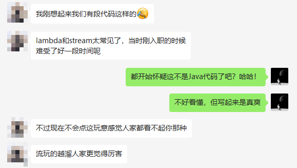
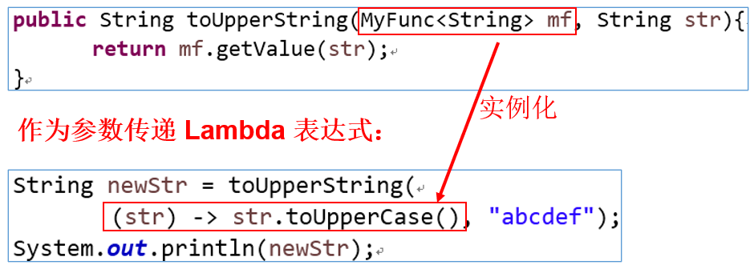
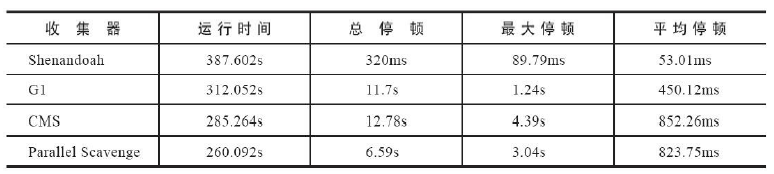
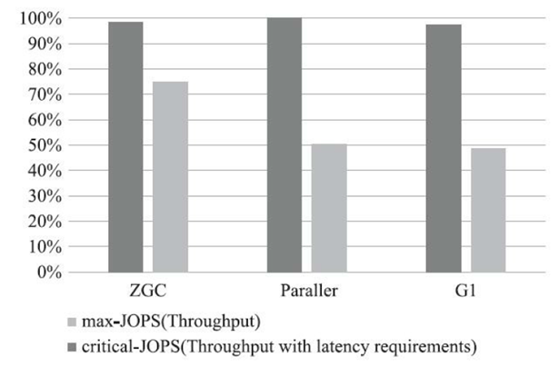
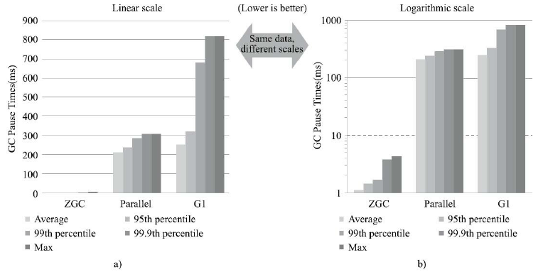

第18章_JDK8-17新特性（上）
本章专题与脉络

1. Java版本迭代概述
1.1 发布特点（小步快跑，快速迭代）
| 发行版本 | 发行时间 | 备注 |
|---|---|---|
| Java 1.0 | 1996.01.23 | Sun公司发布了Java的第一个开发工具包 |
| Java 5.0 | 2004.09.30 | ①版本号从1.4直接更新至5.0；②平台更名为JavaSE、JavaEE、JavaME |
| Java 8.0 | 2014.03.18 | 此版本是继Java 5.0以来变化最大的版本。是长期支持版本（LTS） |
| Java 9.0 | 2017.09.22 | 此版本开始，每半年更新一次 |
| Java 10.0 | 2018.03.21 | |
| Java 11.0 | 2018.09.25 | JDK安装包取消独立JRE安装包，是长期支持版本（LTS） |
| Java 12.0 | 2019.03.19 | |
| … | … | |
| Java17.0 | 2021.09 | 发布Java 17.0，版本号也称为21.9，是长期支持版本（LTS） |
| … | … | |
| Java19.0 | 2022.09 | 发布Java19.0，版本号也称为22.9。 |
从Java 9 这个版本开始，Java 的计划发布周期是 6个月。
这意味着Java的更新从传统的以特性驱动的发布周期，转变为以时间驱动的发布模式，并且承诺不会跳票。通过这样的方式，开发团队可以把一些关键特性尽早合并到 JDK 之中，以快速得到开发者反馈，在一定程度上避免出现像 Java 9 两次被迫延迟发布的窘况。
针对企业客户的需求，Oracle 将以三年为周期发布长期支持版本（long term support）。
Oracle 的官方观点认为：与 Java 7->8->9 相比，Java 9->10->11的升级和 8->8u20->8u40 更相似。
新模式下的 Java 版本发布都会包含许多变更，包括语言变更和 JVM 变更，这两者都会对 IDE、字节码库和框架产生重大影响。此外，不仅会新增其他 API，还会有 API被删除（这在 Java 8 之前没有发生过）。
目前看这种发布策略是非常成功的，解开了 Java/JVM 演进的许多枷锁，至关重要的是，OpenJDK 的权力中心，正在转移到开发社区和开发者手中。在新的模式中，既可以利用 LTS 满足企业长期可靠支持的需求，也可以满足各种开发者对于新特性迭代的诉求。因为用 2-3 年的最小间隔粒度来试验一个特性，基本是不现实的。
1.2 名词解释
名词解释：Oracle JDK和Open JDK
这两个JDK最大不同就是许可证不一样。但是对于个人用户来讲，没区别。
| Oracle JDK | Open JDK | |
|---|---|---|
| 来源 | Oracle团队维护 | Oracle和Open Java社区 |
| 授权协议 | Java 17及更高版本 Oracle Java SE 许可证 Java16及更低版本甲骨文免费条款和条件 （NFTC） 许可协议 |
GPL v2许可证 |
| 关系 | 由Open JDK构建，增加了少许内容 | |
| 是否收费 | 2021年9月起Java17及更高版本所有用户免费。 16及更低版本，个人用户、开发用户免费。 | 2017年9月起，所有版本免费 |
| 对语法的支持 | 一致 | 一致 |
名词解释：JEP
JEP(JDK Enhancement Proposals)：jdk 改进提案，每当需要有新的设想时候，JEP可以提出非正式的规范(specification)，被正式认可的JEP正式写进JDK的发展路线图并分配版本号。
名词解释：LTS
LTS（Long-term Support）即长期支持。Oracle官网提供了对Oracle JDK个别版本的长期支持，即使发发行了新版本，比如目前最新的JDK19，在结束日期前，LTS版本都会被长期支持。（出了bug，会被修复，非LTS则不会再有补丁发布）所以，一定要选一个LTS版本，不然出了漏洞没人修复了。
| 版本 | 开始日期 | 结束日期 | 延期结束日期 |
|---|---|---|---|
| 7（LTS） | 2011年7月 | 2019年7月 | 2022年7月 |
| 8（LTS） | 2014年3月 | 2022年3月 | 2030年12月 |
| 11（LTS） | 2018年9月 | 2023年9月 | 2026年9月 |
| 17（LTS） | 2021年9月 | 2026年9月 | 2029年9月 |
| 21（LTS） | 2023年9月 | 2028年9月 | 2031年9月 |
如果要选择Oracle JDK，目前可选的LTS版本为8、11、17三个。
1.3 各版本支持时间路线图

1.4 各版本介绍

jdk 9
Java 9 提供了超过150项新功能特性，包括备受期待的模块化系统、可交互的 REPL 工具：jshell，JDK 编译工具，Java 公共 API 和私有代码，以及安全增强、扩展提升、性能管理改善等。
特性太多，查看链接：
https://openjdk.java.net/projects/jdk9/
jdk 10
https://openjdk.java.net/projects/jdk/10/
286: Local-Variable Type Inference 局部变量类型推断
296: Consolidate the JDK Forest into a Single Repository JDK库的合并
304: Garbage-Collector Interface 统一的垃圾回收接口
307: Parallel Full GC for G1 为G1提供并行的Full GC
310: Application Class-Data Sharing 应用程序类数据（AppCDS）共享
312: Thread-Local Handshakes ThreadLocal握手交互
313: Remove the Native-Header Generation Tool (javah) 移除JDK中附带的javah工具
314: Additional Unicode Language-Tag Extensions 使用附加的Unicode语言标记扩展
316: Heap Allocation on Alternative Memory Devices 能将堆内存占用分配给用户指定的备用内存设备
317: Experimental Java-Based JIT Compiler 使用Graal基于Java的编译器319: Root Certificates 根证书
322: Time-Based Release Versioning 基于时间定于的发布版本
jdk 11
https://openjdk.java.net/projects/jdk/11/
181: Nest-Based Access Control 基于嵌套的访问控制
309: Dynamic Class-File Constants 动态类文件常量
315: Improve Aarch64 Intrinsics 改进 Aarch64 Intrinsics
318: Epsilon: A No-Op Garbage Collector Epsilon — 一个No-Op（无操作）的垃圾收集器
320: Remove the Java EE and CORBA Modules 删除 Java EE 和 CORBA 模块
321: HTTP Client (Standard) HTTPClient API
323: Local-Variable Syntax for Lambda Parameters 用于 Lambda 参数的局部变量语法
324: Key Agreement with Curve25519 and Curve448 Curve25519 和 Curve448 算法的密钥协议
327: Unicode 10
328: Flight Recorder 飞行记录仪
329: ChaCha20 and Poly1305 Cryptographic Algorithms ChaCha20 和 Poly1305 加密算法
330: Launch Single-File Source-Code Programs 启动单一文件的源代码程序
331: Low-Overhead Heap Profiling 低开销的 Heap Profiling
332: Transport Layer Security (TLS) 1.3 支持 TLS 1.3
333: ZGC: A Scalable Low-Latency Garbage Collector
(Experimental) 可伸缩低延迟垃圾收集器
335: Deprecate the Nashorn JavaScript Engine 弃用 Nashorn JavaScript 引擎
336: Deprecate the Pack200 Tools and API 弃用 Pack200 工具和 API
jdk 12
https://openjdk.java.net/projects/jdk/12/
189：Shenandoah: A Low-Pause-Time Garbage Collector (Experimental) 低暂停时间的GC
230: Microbenchmark Suite 微基准测试套件
325: Switch Expressions (Preview) switch表达式
334: JVM Constants API JVM常量API
340: One AArch64 Port, Not Two 只保留一个AArch64实现
341: Default CDS Archives 默认类数据共享归档文件
344: Abortable Mixed Collections for G1 可中止的G1 Mixed GC
346: Promptly Return Unused Committed Memory from G1 G1及时返回未使用的已分配内存
jdk 13
https://openjdk.java.net/projects/jdk/13/
350: Dynamic CDS Archives 动态CDS档案
351: ZGC: Uncommit Unused Memory ZGC:取消使用未使用的内存
353: Reimplement the Legacy Socket API 重新实现旧版套接字API
354: Switch Expressions (Preview) switch表达式（预览）
355: Text Blocks (Preview) 文本块（预览）
jdk 14
https://openjdk.java.net/projects/jdk/14/
305: Pattern Matching for instanceof (Preview) instanceof的模式匹配
343: Packaging Tool (Incubator) 打包工具
345: NUMA-Aware Memory Allocation for G1 G1的NUMA-Aware内存分配
349: JFR Event Streaming JFR事件流
352: Non-Volatile Mapped Byte Buffers 非易失性映射字节缓冲区
358: Helpful NullPointerExceptions 实用的NullPointerExceptions
359: Records (Preview)
361: Switch Expressions (Standard) Switch表达式
362: Deprecate the Solaris and SPARC Ports 弃用Solaris和SPARC端口
363: Remove the Concurrent Mark Sweep (CMS) Garbage Collector 删除并发标记扫描（CMS）垃圾回收器
364: ZGC on macOS
365: ZGC on Windows
366: Deprecate the ParallelScavenge + SerialOld GC Combination 弃用ParallelScavenge + SerialOld GC组合
367: Remove the Pack200 Tools and API 删除Pack200工具和API
368: Text Blocks (Second Preview) 文本块
370: Foreign-Memory Access API (Incubator) 外部存储器访问API
jdk 15
https://openjdk.java.net/projects/jdk/15/
339: Edwards-Curve Digital Signature Algorithm (EdDSA) EdDSA 数字签名算法
360: Sealed Classes (Preview) 密封类（预览）
371: Hidden Classes 隐藏类
372: Remove the Nashorn JavaScript Engine 移除 Nashorn JavaScript 引擎
373: Reimplement the Legacy DatagramSocket API 重新实现 Legacy DatagramSocket API
374: Disable and Deprecate Biased Locking 禁用偏向锁定
375: Pattern Matching for instanceof (Second Preview) instanceof 模式匹配（第二次预览）
377: ZGC: A Scalable Low-Latency Garbage Collector ZGC：一个可扩展的低延迟垃圾收集器
378: Text Blocks 文本块
379: Shenandoah: A Low-Pause-Time Garbage Collector Shenandoah:低暂停时间垃圾收集器
381: Remove the Solaris and SPARC Ports 移除 Solaris 和 SPARC 端口
383: Foreign-Memory Access API (Second Incubator) 外部存储器访问 API（第二次孵化版）
384: Records (Second Preview) Records（第二次预览）
385: Deprecate RMI Activation for Removal 废弃 RMI 激活机制
jdk 16
https://openjdk.java.net/projects/jdk/16/
338: Vector API (Incubator) Vector API（孵化器）
347: Enable C++14 Language Features JDK C++的源码中允许使用C++14的语言特性
357: Migrate from Mercurial to Git OpenJDK源码的版本控制从Mercurial (hg) 迁移到git
369: Migrate to GitHub OpenJDK源码的版本控制迁移到github上
376: ZGC: Concurrent Thread-Stack Processing ZGC：并发线程处理
380: Unix-Domain Socket Channels Unix域套接字通道
386: Alpine Linux Port 将glibc的jdk移植到使用musl的alpine linux上
387: Elastic Metaspace 弹性元空间
388: Windows/AArch64 Port 移植JDK到Windows/AArch64
389: Foreign Linker API (Incubator) 提供jdk.incubator.foreign来简化native code的调用
390: Warnings for Value-Based Classes 提供基于值的类的警告
392: Packaging Tool jpackage打包工具转正
393: Foreign-Memory Access API (Third Incubator)
394: Pattern Matching for instanceof Instanceof的模式匹配转正
395: Records Records转正
396: Strongly Encapsulate JDK Internals by Default 默认情况下，封装了JDK内部构件
397: Sealed Classes (Second Preview) 密封类
jdk 17
https://openjdk.java.net/projects/jdk/17/
306: Restore Always-Strict Floating-Point Semantics 恢复始终严格的浮点语义
356: Enhanced Pseudo-Random Number Generators 增强型伪随机数生成器
382: New macOS Rendering Pipeline 新的macOS渲染管道
391: macOS/AArch64 Port macOS/AArch64端口
398: Deprecate the Applet API for Removal 弃用Applet API后续将进行删除
403: Strongly Encapsulate JDK Internals 强封装JDK的内部API
406: Pattern Matching for switch (Preview) switch模式匹配（预览）
407: Remove RMI Activation 删除RMI激活机制
409: Sealed Classes 密封类转正
410: Remove the Experimental AOT and JIT Compiler 删除实验性的AOT和JIT编译器
411: Deprecate the Security Manager for Removal 弃用即将删除的安全管理器
412: Foreign Function & Memory API (Incubator) 外部函数和内存API（孵化特性）
414: Vector API (Second Incubator) Vector API（第二次孵化特性）
415: Context-Specific Deserialization Filters 上下文特定的反序列化过滤器
1.5 JDK各版本下载链接
https://www.oracle.com/java/technologies/downloads/archive/
1.6 如何学习新特性
对于新特性，我们应该从哪几个角度学习新特性呢？
语法层面：
- 比如JDK5中的自动拆箱、自动装箱、enum、泛型
- 比如JDK8中的lambda表达式、接口中的默认方法、静态方法
- 比如JDK10中局部变量的类型推断
- 比如JDK12中的switch
- 比如JDK13中的文本块
API层面：
- 比如JDK8中的Stream、Optional、新的日期时间、HashMap的底层结构
- 比如JDK9中String的底层结构
- 新的 / 过时的 API
底层优化
比如JDK8中永久代被元空间替代、新的JS执行引擎
比如新的垃圾回收器、GC参数、JVM的优化
2. Java8新特性：Lambda表达式
2.1 关于Java8新特性简介
Java 8 (又称为 JDK 8或JDK1.8) 是 Java 语言开发的一个主要版本。 Java 8 是oracle公司于2014年3月发布，可以看成是自Java 5 以来最具革命性的版本。Java 8为Java语言、编译器、类库、开发工具与JVM带来了大量新特性。

速度更快
代码更少(增加了新的语法：Lambda 表达式)
强大的 Stream API
便于并行
- 并行流就是把一个内容分成多个数据块，并用不同的线程分别处理每个数据块的流。相比较串行的流，并行的流可以很大程度上提高程序的执行效率。
- Java 8 中将并行进行了优化，我们可以很容易的对数据进行并行操作。Stream API 可以声明性地通过 parallel() 与 sequential() 在并行流与顺序流之间进行切换。
最大化减少空指针异常：Optional
Nashorn引擎，允许在JVM上运行JS应用
- 发音“nass-horn”，是德国二战时一个坦克的命名
- javascript运行在jvm已经不是新鲜事了，Rhino早在jdk6的时候已经存在。现在替代Rhino，官方的解释是Rhino相比其他JavaScript引擎（比如google的V8）实在太慢了，改造Rhino还不如重写。所以Nashorn的性能也是其一个亮点。
- Nashorn 项目在 JDK 9 中得到改进；在JDK11 中
Deprecated，后续JDK15版本中remove。在JDK11中取以代之的是GraalVM。（GraalVM是一个运行时平台，它支持Java和其他基于Java字节码的语言，但也支持其他语言，如JavaScript，Ruby，Python或LLVM。性能是Nashorn的2倍以上。）
2.2 冗余的匿名内部类
当需要启动一个线程去完成任务时，通常会通过java.lang.Runnable接口来定义任务内容，并使用java.lang.Thread类来启动该线程。代码如下：
package com.atguigu.fp;
public class UseFunctionalProgramming {
public static void main(String[] args) {
new Thread(new Runnable() {
@Override
public void run() {
System.out.println("多线程任务执行！");
}
}).start(); // 启动线程
}
}本着“一切皆对象”的思想，这种做法是无可厚非的：首先创建一个Runnable接口的匿名内部类对象来指定任务内容，再将其交给一个线程来启动。
代码分析：
对于Runnable的匿名内部类用法，可以分析出几点内容：
Thread类需要Runnable接口作为参数，其中的抽象run方法是用来指定线程任务内容的核心；- 为了指定
run的方法体，不得不需要Runnable接口的实现类； - 为了省去定义一个
RunnableImpl实现类的麻烦，不得不使用匿名内部类； - 必须覆盖重写抽象
run方法，所以方法名称、方法参数、方法返回值不得不再写一遍，且不能写错； - 而实际上，似乎只有方法体才是关键所在。
2.3 好用的lambda表达式


2.4 Lambda 及其使用举例
Lambda 是一个匿名函数，我们可以把 Lambda 表达式理解为是一段可以传递的代码（将代码像数据一样进行传递）。使用它可以写出更简洁、更灵活的代码。作为一种更紧凑的代码风格，使Java的语言表达能力得到了提升。
- 从匿名类到 Lambda 的转换举例1
- 从匿名类到 Lambda 的转换举例2

2.5 语法
Lambda 表达式：在Java 8 语言中引入的一种新的语法元素和操作符。这个操作符为 “->” ， 该操作符被称为 Lambda 操作符或箭头操作符。它将 Lambda 分为两个部分：
- 左侧：指定了 Lambda 表达式需要的参数列表
- 右侧：指定了 Lambda 体，是抽象方法的实现逻辑，也即 Lambda 表达式要执行的功能。
语法格式一：无参，无返回值
@Test
public void test1(){
//未使用Lambda表达式
Runnable r1 = new Runnable() {
@Override
public void run() {
System.out.println("我爱北京天安门");
}
};
r1.run();
System.out.println("***********************");
//使用Lambda表达式
Runnable r2 = () -> {
System.out.println("我爱北京故宫");
};
r2.run();
}适用于接口中只有一个抽象方法，否则无法区分是哪一个方法
语法格式二：Lambda 需要一个参数，但是没有返回值。
@Test
public void test2(){
//未使用Lambda表达式
Consumer<String> con = new Consumer<String>() {
@Override
public void accept(String s) {
System.out.println(s);
}
};
con.accept("谎言和誓言的区别是什么？");
System.out.println("*******************");
//使用Lambda表达式
Consumer<String> con1 = (String s) -> {
System.out.println(s);
};
con1.accept("一个是听得人当真了，一个是说的人当真了");
}语法格式三：数据类型可以省略，因为可由编译器推断得出，称为“类型推断”
@Test
public void test3(){
//语法格式三使用前
Consumer<String> con1 = (String s) -> {
System.out.println(s);
};
con1.accept("一个是听得人当真了，一个是说的人当真了");
System.out.println("*******************");
//语法格式三使用后
Consumer<String> con2 = (s) -> {
System.out.println(s);
};
con2.accept("一个是听得人当真了，一个是说的人当真了");
}语法格式四：Lambda 若只需要一个参数时，参数的小括号可以省略
@Test
public void test4(){
//语法格式四使用前
Consumer<String> con1 = (s) -> {
System.out.println(s);
};
con1.accept("一个是听得人当真了，一个是说的人当真了");
System.out.println("*******************");
//语法格式四使用后
Consumer<String> con2 = s -> {
System.out.println(s);
};
con2.accept("一个是听得人当真了，一个是说的人当真了");
}语法格式五：Lambda 需要两个或以上的参数，多条执行语句，并且可以有返回值
@Test
public void test5(){
//语法格式五使用前
Comparator<Integer> com1 = new Comparator<Integer>() {
@Override
public int compare(Integer o1, Integer o2) {
System.out.println(o1);
System.out.println(o2);
return o1.compareTo(o2);
}
};
System.out.println(com1.compare(12,21));
System.out.println("*****************************");
//语法格式五使用后
Comparator<Integer> com2 = (o1,o2) -> {
System.out.println(o1);
System.out.println(o2);
return o1.compareTo(o2);
};
System.out.println(com2.compare(12,6));
}语法格式六：当 Lambda 体只有一条语句时，return 与大括号若有，都可以省略
@Test
public void test6(){
//语法格式六使用前
Comparator<Integer> com1 = (o1,o2) -> {
return o1.compareTo(o2);
};
System.out.println(com1.compare(12,6));
System.out.println("*****************************");
//语法格式六使用后
Comparator<Integer> com2 = (o1,o2) -> o1.compareTo(o2);
System.out.println(com2.compare(12,21));
}
@Test
public void test7(){
//语法格式六使用前
Consumer<String> con1 = s -> {
System.out.println(s);
};
con1.accept("一个是听得人当真了，一个是说的人当真了");
System.out.println("*****************************");
//语法格式六使用后
Consumer<String> con2 = s -> System.out.println(s);
con2.accept("一个是听得人当真了，一个是说的人当真了");
}2.6 关于类型推断
在语法格式三 Lambda 表达式中的参数类型都是由编译器推断得出的。Lambda 表达式中无需指定类型，程序依然可以编译，这是因为 javac 根据程序的上下文，在后台推断出了参数的类型。Lambda 表达式的类型依赖于上下文环境，是由编译器推断出来的。这就是所谓的“类型推断”。
举例：
@Test
public void test() {
//类型推断1
ArrayList<String> list = new ArrayList<>();
//类型推断2
int[] arr = {1, 2, 3};
}3. Java8新特性：函数式(Functional)接口
3.1 什么是函数式接口
- 只包含
一个抽象方法（Single Abstract Method，简称SAM）的接口，称为函数式接口。当然该接口可以包含其他非抽象方法。 - 你可以通过 Lambda 表达式来创建该接口的对象。（若 Lambda 表达式抛出一个受检异常(即：非运行时异常)，那么该异常需要在目标接口的抽象方法上进行声明）。
- 我们可以在一个接口上使用
@FunctionalInterface注解，这样做可以检查它是否是一个函数式接口。同时 javadoc 也会包含一条声明，说明这个接口是一个函数式接口。 - 在
java.util.function包下定义了Java 8 的丰富的函数式接口
3.2 如何理解函数式接口

- Java从诞生日起就是一直倡导“一切皆对象”，在Java里面面向对象(OOP)编程是一切。但是随着python、scala等语言的兴起和新技术的挑战，Java不得不做出调整以便支持更加广泛的技术要求，即Java不但可以支持OOP还可以支持OOF（面向函数编程）
- Java8引入了Lambda表达式之后，Java也开始支持函数式编程。
- Lambda表达式不是Java最早使用的。目前C++，C#，Python，Scala等均支持Lambda表达式。
- 面向对象的思想：
- 做一件事情，找一个能解决这个事情的对象，调用对象的方法，完成事情。
- 函数式编程思想：
- 只要能获取到结果，谁去做的，怎么做的都不重要，重视的是结果，不重视过程。
- 在函数式编程语言当中，函数被当做一等公民对待。在将函数作为一等公民的编程语言中，Lambda表达式的类型是函数。但是在Java8中，有所不同。在Java8中，Lambda表达式是对象，而不是函数，它们必须依附于一类特别的对象类型——函数式接口。
- 简单的说，在Java8中，Lambda表达式就是一个函数式接口的实例。这就是Lambda表达式和函数式接口的关系。也就是说，只要一个对象是函数式接口的实例，那么该对象就可以用Lambda表达式来表示。
3.3 举例
举例1：

举例2：
作为参数传递 Lambda 表达式：
作为参数传递 Lambda 表达式：为了将 Lambda 表达式作为参数传递，接收Lambda 表达式的参数类型必须是与该 Lambda 表达式兼容的函数式接口的类型。
3.4 Java 内置函数式接口
3.4.1 之前的函数式接口
之前学过的接口，有些就是函数式接口，比如：
- java.lang.Runnable
- public void run()
- java.lang.Iterable
- public Iterator
iterate()
- public Iterator
- java.lang.Comparable
- public int compareTo(T t)
- java.util.Comparator
- public int compare(T t1, T t2)
3.4.2 四大核心函数式接口
| 函数式接口 | 称谓 | 参数类型 | 用途 |
|---|---|---|---|
Consumer<T> |
消费型接口 | T | 对类型为T的对象应用操作，包含方法： void accept(T t) |
Supplier<T> |
供给型接口 | 无 | 返回类型为T的对象，包含方法：T get() |
Function<T, R> |
函数型接口 | T | 对类型为T的对象应用操作，并返回结果。结果是R类型的对象。包含方法：R apply(T t) |
Predicate<T> |
判断型接口 | T | 确定类型为T的对象是否满足某约束，并返回 boolean 值。包含方法：boolean test(T t) |
3.4.3 其它接口
类型1：消费型接口
消费型接口的抽象方法特点：有形参，但是返回值类型是void
| 接口名 | 抽象方法 | 描述 |
|---|---|---|
| BiConsumer<T,U> | void accept(T t, U u) | 接收两个对象用于完成功能 |
| DoubleConsumer | void accept(double value) | 接收一个double值 |
| IntConsumer | void accept(int value) | 接收一个int值 |
| LongConsumer | void accept(long value) | 接收一个long值 |
| ObjDoubleConsumer |
void accept(T t, double value) | 接收一个对象和一个double值 |
| ObjIntConsumer |
void accept(T t, int value) | 接收一个对象和一个int值 |
| ObjLongConsumer |
void accept(T t, long value) | 接收一个对象和一个long值 |
类型2：供给型接口
这类接口的抽象方法特点：无参，但是有返回值
| 接口名 | 抽象方法 | 描述 |
|---|---|---|
| BooleanSupplier | boolean getAsBoolean() | 返回一个boolean值 |
| DoubleSupplier | double getAsDouble() | 返回一个double值 |
| IntSupplier | int getAsInt() | 返回一个int值 |
| LongSupplier | long getAsLong() | 返回一个long值 |
类型3：函数型接口
这类接口的抽象方法特点：既有参数又有返回值
| 接口名 | 抽象方法 | 描述 |
|---|---|---|
| UnaryOperator |
T apply(T t) | 接收一个T类型对象，返回一个T类型对象结果 |
| DoubleFunction |
R apply(double value) | 接收一个double值，返回一个R类型对象 |
| IntFunction |
R apply(int value) | 接收一个int值，返回一个R类型对象 |
| LongFunction |
R apply(long value) | 接收一个long值，返回一个R类型对象 |
| ToDoubleFunction |
double applyAsDouble(T value) | 接收一个T类型对象，返回一个double |
| ToIntFunction |
int applyAsInt(T value) | 接收一个T类型对象，返回一个int |
| ToLongFunction |
long applyAsLong(T value) | 接收一个T类型对象，返回一个long |
| DoubleToIntFunction | int applyAsInt(double value) | 接收一个double值，返回一个int结果 |
| DoubleToLongFunction | long applyAsLong(double value) | 接收一个double值，返回一个long结果 |
| IntToDoubleFunction | double applyAsDouble(int value) | 接收一个int值，返回一个double结果 |
| IntToLongFunction | long applyAsLong(int value) | 接收一个int值，返回一个long结果 |
| LongToDoubleFunction | double applyAsDouble(long value) | 接收一个long值，返回一个double结果 |
| LongToIntFunction | int applyAsInt(long value) | 接收一个long值，返回一个int结果 |
| DoubleUnaryOperator | double applyAsDouble(double operand) | 接收一个double值，返回一个double |
| IntUnaryOperator | int applyAsInt(int operand) | 接收一个int值，返回一个int结果 |
| LongUnaryOperator | long applyAsLong(long operand) | 接收一个long值，返回一个long结果 |
| BiFunction<T,U,R> | R apply(T t, U u) | 接收一个T类型和一个U类型对象，返回一个R类型对象结果 |
| BinaryOperator |
T apply(T t, T u) | 接收两个T类型对象，返回一个T类型对象结果 |
| ToDoubleBiFunction<T,U> | double applyAsDouble(T t, U u) | 接收一个T类型和一个U类型对象，返回一个double |
| ToIntBiFunction<T,U> | int applyAsInt(T t, U u) | 接收一个T类型和一个U类型对象，返回一个int |
| ToLongBiFunction<T,U> | long applyAsLong(T t, U u) | 接收一个T类型和一个U类型对象，返回一个long |
| DoubleBinaryOperator | double applyAsDouble(double left, double right) | 接收两个double值，返回一个double结果 |
| IntBinaryOperator | int applyAsInt(int left, int right) | 接收两个int值，返回一个int结果 |
| LongBinaryOperator | long applyAsLong(long left, long right) | 接收两个long值，返回一个long结果 |
类型4：判断型接口
这类接口的抽象方法特点：有参，但是返回值类型是boolean结果。
| 接口名 | 抽象方法 | 描述 |
|---|---|---|
| BiPredicate<T,U> | boolean test(T t, U u) | 接收两个对象 |
| DoublePredicate | boolean test(double value) | 接收一个double值 |
| IntPredicate | boolean test(int value) | 接收一个int值 |
| LongPredicate | boolean test(long value) | 接收一个long值 |
3.4.4 内置接口代码演示
举例1：
package com.atguigu.four;
import java.util.Arrays;
import java.util.List;
public class TestConsumer {
public static void main(String[] args) {
List<String> list = Arrays.asList("java","c","python","c++","VB","C#");
//遍历Collection集合，并将传递给action参数的操作代码应用在每一个元素上。
list.forEach(s -> System.out.println(s));
}
}举例2：
package com.atguigu.four;
import java.util.function.Supplier;
public class TestSupplier {
public static void main(String[] args) {
Supplier<String> supplier = () -> "尚硅谷";
System.out.println(supplier.get());
}
}举例3：
package com.atguigu.four;
import java.util.ArrayList;
public class TestPredicate {
public static void main(String[] args) {
ArrayList<String> list = new ArrayList<>();
list.add("hello");
list.add("java");
list.add("atguigu");
list.add("ok");
list.add("yes");
System.out.println("删除之前：");
list.forEach(t-> System.out.println(t));
//用于删除集合中满足filter指定的条件判断的。
//删除包含o字母的元素
list.removeIf(s -> s.contains("o"));
System.out.println("删除包含o字母的元素之后：");
list.forEach(t-> System.out.println(t));
}
}举例4：
package com.atguigu.four;
import java.util.function.Function;
public class TestFunction {
public static void main(String[] args) {
//使用Lambda表达式实现Function<T,R>接口，可以实现将一个字符串首字母转为大写的功能。
Function<String,String> fun = s -> s.substring(0,1).toUpperCase() + s.substring(1);
System.out.println(fun.apply("hello"));
}
}
3.4.5 练习
练习1：无参无返回值形式
假如有自定义函数式接口Call如下：
public interface Call {
void shout();
}在测试类中声明一个如下方法：
public static void callSomething(Call call){
call.shout();
}在测试类的main方法中调用callSomething方法，并用Lambda表达式为形参call赋值，可以喊出任意你想说的话。
public class TestLambda {
public static void main(String[] args) {
callSomething(()->System.out.println("回家吃饭"));
callSomething(()->System.out.println("我爱你"));
callSomething(()->System.out.println("滚蛋"));
callSomething(()->System.out.println("回来"));
}
public static void callSomething(Call call){
call.shout();
}
}
interface Call {
void shout();
}练习2：消费型接口
代码示例：Consumer
在JDK1.8中Collection集合接口的父接口Iterable接口中增加了一个默认方法：
public default void forEach(Consumer<? super T> action) 遍历Collection集合的每个元素，执行“xxx消费型”操作。
在JDK1.8中Map集合接口中增加了一个默认方法：
public default void forEach(BiConsumer<? super K,? super V> action)遍历Map集合的每对映射关系，执行“xxx消费型”操作。
案例：
（1）创建一个Collection系列的集合，添加一些字符串，调用forEach方法遍历查看
（2）创建一个Map系列的集合，添加一些(key,value)键值对，调用forEach方法遍历查看
示例代码：
@Test
public void test1(){
List<String> list = Arrays.asList("hello","java","lambda","atguigu");
list.forEach(s -> System.out.println(s));
}
@Test
public void test2(){
HashMap<Integer,String> map = new HashMap<>();
map.put(1, "hello");
map.put(2, "java");
map.put(3, "lambda");
map.put(4, "atguigu");
map.forEach((k,v) -> System.out.println(k+"->"+v));
}练习3：供给型接口
代码示例：Supplier
在JDK1.8中增加了StreamAPI，java.util.stream.Stream
public static <T> Stream<T> generate(Supplier<T> s)可以创建Stream的对象。而又包含一个forEach方法可以遍历流中的元素：public void forEach(Consumer<? super T> action)。
案例：
现在请调用Stream的generate方法，来产生一个流对象，并调用Math.random()方法来产生数据，为Supplier函数式接口的形参赋值。最后调用forEach方法遍历流中的数据查看结果。
@Test
public void test2(){
Stream.generate(() -> Math.random()).forEach(num -> System.out.println(num));
}练习4：功能型接口
代码示例：Function<T,R>接口
在JDK1.8时Map接口增加了很多方法，例如：
public default void replaceAll(BiFunction<? super K,? super V,? extends V> function) 按照function指定的操作替换map中的value。
public default void forEach(BiConsumer<? super K,? super V> action)遍历Map集合的每对映射关系，执行“xxx消费型”操作。
案例：
（1）声明一个Employee员工类型，包含编号、姓名、薪资。
（2）添加n个员工对象到一个HashMap<Integer,Employee>集合中，其中员工编号为key，员工对象为value。
（3）调用Map的forEach遍历集合
（4）调用Map的replaceAll方法，将其中薪资低于10000元的，薪资设置为10000。
（5）再次调用Map的forEach遍历集合查看结果
Employee类：
class Employee{
private int id;
private String name;
private double salary;
public Employee(int id, String name, double salary) {
super();
this.id = id;
this.name = name;
this.salary = salary;
}
public Employee() {
super();
}
public int getId() {
return id;
}
public void setId(int id) {
this.id = id;
}
public String getName() {
return name;
}
public void setName(String name) {
this.name = name;
}
public double getSalary() {
return salary;
}
public void setSalary(double salary) {
this.salary = salary;
}
@Override
public String toString() {
return "Employee [id=" + id + ", name=" + name + ", salary=" + salary + "]";
}
}测试类：
import java.util.HashMap;
public class TestLambda {
public static void main(String[] args) {
HashMap<Integer,Employee> map = new HashMap<>();
Employee e1 = new Employee(1, "张三", 8000);
Employee e2 = new Employee(2, "李四", 9000);
Employee e3 = new Employee(3, "王五", 10000);
Employee e4 = new Employee(4, "赵六", 11000);
Employee e5 = new Employee(5, "钱七", 12000);
map.put(e1.getId(), e1);
map.put(e2.getId(), e2);
map.put(e3.getId(), e3);
map.put(e4.getId(), e4);
map.put(e5.getId(), e5);
map.forEach((k,v) -> System.out.println(k+"="+v));
System.out.println();
map.replaceAll((k,v)->{
if(v.getSalary()<10000){
v.setSalary(10000);
}
return v;
});
map.forEach((k,v) -> System.out.println(k+"="+v));
}
}练习5：判断型接口
代码示例：Predicate
JDK1.8时，Collecton
public default boolean removeIf(Predicate<? super E> filter) 用于删除集合中满足filter指定的条件判断的。
public default void forEach(Consumer<? super T> action) 遍历Collection集合的每个元素，执行“xxx消费型”操作。
案例：
（1）添加一些字符串到一个Collection集合中
（2）调用forEach遍历集合
（3）调用removeIf方法，删除其中字符串的长度<5的
（4）再次调用forEach遍历集合
import java.util.ArrayList;
public class TestLambda {
public static void main(String[] args) {
ArrayList<String> list = new ArrayList<>();
list.add("hello");
list.add("java");
list.add("atguigu");
list.add("ok");
list.add("yes");
list.forEach(str->System.out.println(str));
System.out.println();
list.removeIf(str->str.length()<5);
list.forEach(str->System.out.println(str));
}
}练习6：判断型接口
案例：
（1）声明一个Employee员工类型，包含编号、姓名、性别，年龄，薪资。
（2）声明一个EmployeeSerice员工管理类，包含一个ArrayList
（3）在EmployeeSerice员工管理类中，声明一个方法：ArrayList
（4）在测试类中创建EmployeeSerice员工管理类的对象，并调用get方法，分别获取：
- 所有员工对象
- 所有年龄超过35的员工
- 所有薪资高于15000的女员工
- 所有编号是偶数的员工
- 名字是“张三”的员工
- 年龄超过25，薪资低于10000的男员工
示例代码：
Employee类：
public class Employee{
private int id;
private String name;
private char gender;
private int age;
private double salary;
public Employee(int id, String name, char gender, int age, double salary) {
super();
this.id = id;
this.name = name;
this.gender = gender;
this.age = age;
this.salary = salary;
}
public Employee() {
super();
}
public int getId() {
return id;
}
public void setId(int id) {
this.id = id;
}
public String getName() {
return name;
}
public void setName(String name) {
this.name = name;
}
public double getSalary() {
return salary;
}
public void setSalary(double salary) {
this.salary = salary;
}
@Override
public String toString() {
return "Employee [id=" + id + ", name=" + name + ", gender=" + gender + ", age=" + age + ", salary=" + salary
+ "]";
}
}员工管理类：
class EmployeeService{
private ArrayList<Employee> all;
public EmployeeService(){
all = new ArrayList<Employee>();
all.add(new Employee(1, "张三", '男', 33, 8000));
all.add(new Employee(2, "翠花", '女', 23, 18000));
all.add(new Employee(3, "无能", '男', 46, 8000));
all.add(new Employee(4, "李四", '女', 23, 9000));
all.add(new Employee(5, "老王", '男', 23, 15000));
all.add(new Employee(6, "大嘴", '男', 23, 11000));
}
public ArrayList<Employee> get(Predicate<Employee> p){
ArrayList<Employee> result = new ArrayList<Employee>();
for (Employee emp : result) {
if(p.test(emp)){
result.add(emp);
}
}
return result;
}
}测试类：
public class TestLambda {
public static void main(String[] args) {
EmployeeService es = new EmployeeService();
es.get(e -> true).forEach(e->System.out.println(e));
System.out.println();
es.get(e -> e.getAge()>35).forEach(e->System.out.println(e));
System.out.println();
es.get(e -> e.getSalary()>15000 && e.getGender()=='女').forEach(e->System.out.println(e));
System.out.println();
es.get(e -> e.getId()%2==0).forEach(e->System.out.println(e));
System.out.println();
es.get(e -> "张三".equals(e.getName())).forEach(e->System.out.println(e));
System.out.println();
es.get(e -> e.getAge()>25 && e.getSalary()<10000 && e.getGender()=='男').forEach(e->System.out.println(e));
}
}4. Java8新特性：方法引用与构造器引用
Lambda表达式是可以简化函数式接口的变量或形参赋值的语法。而方法引用和构造器引用是为了简化Lambda表达式的。
4.1 方法引用
当要传递给Lambda体的操作，已经有实现的方法了，可以使用方法引用！
方法引用可以看做是Lambda表达式深层次的表达。换句话说，方法引用就是Lambda表达式，也就是函数式接口的一个实例，通过方法的名字来指向一个方法，可以认为是Lambda表达式的一个语法糖。
语法糖（Syntactic sugar），也译为糖衣语法，是由英国计算机科学家彼得·约翰·兰达（Peter J. Landin）发明的一个术语，指计算机语言中添加的某种语法，这种语法
对语言的功能并没有影响，但是更方便程序员使用。通常来说使用语法糖能够增加程序的可读性，从而减少程序代码出错的机会。
4.1.1 方法引用格式
格式：使用方法引用操作符 “
::” 将类(或对象) 与 方法名分隔开来。- 两个:中间不能有空格，而且必须英文状态下半角输入
如下三种主要使用情况：
- 情况1：
对象 :: 实例方法名 - 情况2：
类 :: 静态方法名 - 情况3：
类 :: 实例方法名
- 情况1：
4.1.2 方法引用使用前提
要求1：Lambda体只有一句语句，并且是通过调用一个对象的/类现有的方法来完成的
例如：System.out对象，调用println()方法来完成Lambda体
Math类，调用random()静态方法来完成Lambda体
要求2：
针对情况1：函数式接口中的抽象方法a在被重写时使用了某一个对象的方法b。如果方法a的形参列表、返回值类型与方法b的形参列表、返回值类型都相同，则我们可以使用方法b实现对方法a的重写、替换。
针对情况2：函数式接口中的抽象方法a在被重写时使用了某一个类的静态方法b。如果方法a的形参列表、返回值类型与方法b的形参列表、返回值类型都相同，则我们可以使用方法b实现对方法a的重写、替换。
针对情况3：函数式接口中的抽象方法a在被重写时使用了某一个对象的方法b。如果方法a的返回值类型与方法b的返回值类型相同，同时方法a的形参列表中有n个参数，方法b的形参列表有n-1个参数，且方法a的第1个参数作为方法b的调用者，且方法a的后n-1参数与方法b的n-1参数匹配（类型相同或满足多态场景也可以）
例如：t->System.out.println(t)
() -> Math.random() 都是无参
4.1.3 举例
public class MethodRefTest {
// 情况一：对象 :: 实例方法
//Consumer中的void accept(T t)
//PrintStream中的void println(T t)
@Test
public void test1() {
Consumer<String> con1 = str -> System.out.println(str);
con1.accept("北京");
System.out.println("*******************");
PrintStream ps = System.out;
Consumer<String> con2 = ps::println;
con2.accept("beijing");
}
//Supplier中的T get()
//Employee中的String getName()
@Test
public void test2() {
Employee emp = new Employee(1001,"Tom",23,5600);
Supplier<String> sup1 = () -> emp.getName();
System.out.println(sup1.get());
System.out.println("*******************");
Supplier<String> sup2 = emp::getName;
System.out.println(sup2.get());
}
// 情况二：类 :: 静态方法
//Comparator中的int compare(T t1,T t2)
//Integer中的int compare(T t1,T t2)
@Test
public void test3() {
Comparator<Integer> com1 = (t1,t2) -> Integer.compare(t1,t2);
System.out.println(com1.compare(12,21));
System.out.println("*******************");
Comparator<Integer> com2 = Integer::compare;
System.out.println(com2.compare(12,3));
}
//Function中的R apply(T t)
//Math中的Long round(Double d)
@Test
public void test4() {
Function<Double,Long> func = new Function<Double, Long>() {
@Override
public Long apply(Double d) {
return Math.round(d);
}
};
System.out.println("*******************");
Function<Double,Long> func1 = d -> Math.round(d);
System.out.println(func1.apply(12.3));
System.out.println("*******************");
Function<Double,Long> func2 = Math::round;
System.out.println(func2.apply(12.6));
}
// 情况三：类 :: 实例方法 (有难度)
// Comparator中的int comapre(T t1,T t2)
// String中的int t1.compareTo(t2)
@Test
public void test5() {
Comparator<String> com1 = (s1,s2) -> s1.compareTo(s2);
System.out.println(com1.compare("abc","abd"));
System.out.println("*******************");
Comparator<String> com2 = String :: compareTo;
System.out.println(com2.compare("abd","abm"));
}
//BiPredicate中的boolean test(T t1, T t2);
//String中的boolean t1.equals(t2)
@Test
public void test6() {
BiPredicate<String,String> pre1 = (s1,s2) -> s1.equals(s2);
System.out.println(pre1.test("abc","abc"));
System.out.println("*******************");
BiPredicate<String,String> pre2 = String :: equals;
System.out.println(pre2.test("abc","abd"));
}
// Function中的R apply(T t)
// Employee中的String getName();
@Test
public void test7() {
Employee employee = new Employee(1001, "Jerry", 23, 6000);
Function<Employee,String> func1 = e -> e.getName();
System.out.println(func1.apply(employee));
System.out.println("*******************");
Function<Employee,String> func2 = Employee::getName;
System.out.println(func2.apply(employee));
}
}4.2 构造器引用
当Lambda表达式是创建一个对象，并且满足Lambda表达式形参，正好是给创建这个对象的构造器的实参列表，就可以使用构造器引用。
格式：类名::new
举例：
public class ConstructorRefTest {
//构造器引用
//Supplier中的T get()
//Employee的空参构造器：Employee()
@Test
public void test1(){
Supplier<Employee> sup = new Supplier<Employee>() {
@Override
public Employee get() {
return new Employee();
}
};
System.out.println("*******************");
Supplier<Employee> sup1 = () -> new Employee();
System.out.println(sup1.get());
System.out.println("*******************");
Supplier<Employee> sup2 = Employee :: new;
System.out.println(sup2.get());
}
//Function中的R apply(T t)
@Test
public void test2(){
Function<Integer,Employee> func1 = id -> new Employee(id);
Employee employee = func1.apply(1001);
System.out.println(employee);
System.out.println("*******************");
Function<Integer,Employee> func2 = Employee :: new;
Employee employee1 = func2.apply(1002);
System.out.println(employee1);
}
//BiFunction中的R apply(T t,U u)
@Test
public void test3(){
BiFunction<Integer,String,Employee> func1 = (id,name) -> new Employee(id,name);
System.out.println(func1.apply(1001,"Tom"));
System.out.println("*******************");
BiFunction<Integer,String,Employee> func2 = Employee :: new;
System.out.println(func2.apply(1002,"Tom"));
}
}package com.atguigu.java2;
/**
* @author 尚硅谷-宋红康 邮箱：shkstart@126.com
*/
public class Employee {
private int id;
private String name;
private int age;
private double salary;
public int getId() {
return id;
}
public void setId(int id) {
this.id = id;
}
public String getName() {
return name;
}
public void setName(String name) {
this.name = name;
}
public int getAge() {
return age;
}
public void setAge(int age) {
this.age = age;
}
public double getSalary() {
return salary;
}
public void setSalary(double salary) {
this.salary = salary;
}
public Employee() {
System.out.println("Employee().....");
}
public Employee(int id) {
this.id = id;
System.out.println("Employee(int id).....");
}
public Employee(int id, String name) {
this.id = id;
this.name = name;
}
public Employee(int id, String name, int age, double salary) {
this.id = id;
this.name = name;
this.age = age;
this.salary = salary;
}
@Override
public String toString() {
return "Employee{" + "id=" + id + ", name='" + name + '\'' + ", age=" + age + ", salary=" + salary + '}';
}
}
4.3 数组构造引用
当Lambda表达式是创建一个数组对象，并且满足Lambda表达式形参，正好是给创建这个数组对象的长度，就可以数组构造引用。
格式：数组类型名::new
举例：
//数组引用
//Function中的R apply(T t)
@Test
public void test4(){
Function<Integer,String[]> func1 = length -> new String[length];
String[] arr1 = func1.apply(5);
System.out.println(Arrays.toString(arr1));
System.out.println("*******************");
Function<Integer,String[]> func2 = String[] :: new;
String[] arr2 = func2.apply(10);
System.out.println(Arrays.toString(arr2));
}5. Java8新特性：强大的Stream API
5.1 说明
- Java8中有两大最为重要的改变。第一个是 Lambda 表达式；另外一个则是 Stream API。
- Stream API ( java.util.stream) 把真正的函数式编程风格引入到Java中。这是目前为止对Java类库
最好的补充，因为Stream API可以极大提供Java程序员的生产力，让程序员写出高效率、干净、简洁的代码。 - Stream 是 Java8 中处理集合的关键抽象概念，它可以指定你希望对集合进行的操作，可以执行非常复杂的查找、过滤和映射数据等操作。 使用Stream API 对集合数据进行操作，就类似于使用 SQL 执行的数据库查询。也可以使用 Stream API 来并行执行操作。简言之，Stream API 提供了一种高效且易于使用的处理数据的方式。
5.2 为什么要使用Stream API
实际开发中，项目中多数数据源都来自于MySQL、Oracle等。但现在数据源可以更多了，有MongDB，Radis等，而这些NoSQL的数据就需要Java层面去处理。
5.3 什么是Stream
Stream 是数据渠道，用于操作数据源（集合、数组等）所生成的元素序列。
Stream 和 Collection 集合的区别：Collection 是一种静态的内存数据结构，讲的是数据，而 Stream 是有关计算的，讲的是计算。前者是主要面向内存，存储在内存中，后者主要是面向 CPU，通过 CPU 实现计算。
注意：
①==Stream 自己不会存储元素。==
②Stream 不会改变源对象。相反，他们会返回一个持有结果的新Stream。
③Stream 操作是延迟执行的。这意味着他们会等到需要结果的时候才执行。即一旦执行终止操作，就执行中间操作链，并产生结果。
④ Stream一旦执行了终止操作，就不能再调用其它中间操作或终止操作了。
5.4 Stream的操作三个步骤
1- 创建 Stream
一个数据源（如：集合、数组），获取一个流
2- 中间操作
每次处理都会返回一个持有结果的新Stream，即中间操作的方法返回值仍然是Stream类型的对象。因此中间操作可以是个操作链，可对数据源的数据进行n次处理，但是在终结操作前，并不会真正执行。
3- 终止操作(终端操作)
终止操作的方法返回值类型就不再是Stream了，因此一旦执行终止操作，就结束整个Stream操作了。一旦执行终止操作，就执行中间操作链，最终产生结果并结束Stream。
5.4.1 创建Stream实例
方式一：通过集合
Java8 中的 Collection 接口被扩展，提供了两个获取流的方法：
default Stream
stream() : 返回一个顺序流 default Stream
parallelStream() : 返回一个并行流
@Test
public void test01(){
List<Integer> list = Arrays.asList(1,2,3,4,5);
//JDK1.8中，Collection系列集合增加了方法
Stream<Integer> stream = list.stream();
}方式二：通过数组
Java8 中的 Arrays 的静态方法 stream() 可以获取数组流：
- static
Stream stream(T[] array): 返回一个流 - public static IntStream stream(int[] array)
- public static LongStream stream(long[] array)
- public static DoubleStream stream(double[] array)
@Test
public void test02(){
String[] arr = {"hello","world"};
Stream<String> stream = Arrays.stream(arr);
}
@Test
public void test03(){
int[] arr = {1,2,3,4,5};
IntStream stream = Arrays.stream(arr);
}方式三：通过Stream的of()
可以调用Stream类静态方法 of(), 通过显示值创建一个流。它可以接收任意数量的参数。
- public static
Stream of(T… values) : 返回一个流
@Test
public void test04(){
Stream<Integer> stream = Stream.of(1,2,3,4,5);
stream.forEach(System.out::println);
}方式四：创建无限流(了解)
可以使用静态方法 Stream.iterate() 和 Stream.generate(), 创建无限流。
迭代
public staticStream iterate(final T seed, final UnaryOperator f) 生成
public staticStream generate(Supplier s)
// 方式四：创建无限流
@Test
public void test05() {
// 迭代
// public static<T> Stream<T> iterate(final T seed, final
// UnaryOperator<T> f)
Stream<Integer> stream = Stream.iterate(0, x -> x + 2);
stream.limit(10).forEach(System.out::println);
// 生成
// public static<T> Stream<T> generate(Supplier<T> s)
Stream<Double> stream1 = Stream.generate(Math::random);
stream1.limit(10).forEach(System.out::println);
}
5.4.2 一系列中间操作
多个中间操作可以连接起来形成一个流水线，除非流水线上触发终止操作，否则中间操作不会执行任何的处理！而在终止操作时一次性全部处理，称为“惰性求值”。
1-筛选与切片
| 方 法 | 描 述 |
|---|---|
| filter(Predicatep) | 接收 Lambda ， 从流中排除某些元素 |
| distinct() | 筛选，通过流所生成元素的 hashCode() 和 equals() 去除重复元素 |
| limit(long maxSize) | 截断流，使其元素不超过给定数量 |
| skip(long n) | 跳过元素，返回一个扔掉了前 n 个元素的流。 若流中元素不足 n 个，则返回一个空流。与 limit(n) 互补 |
2-映 射
| 方法 | 描述 |
|---|---|
| map(Function f) | 接收一个函数作为参数，该函数会被应用到每个元素上，并将其映射成一个新的元素。 |
| mapToDouble(ToDoubleFunction f) | 接收一个函数作为参数，该函数会被应用到每个元素上，产生一个新的 DoubleStream。 |
| mapToInt(ToIntFunction f) | 接收一个函数作为参数，该函数会被应用到每个元素上，产生一个新的 IntStream。 |
| mapToLong(ToLongFunction f) | 接收一个函数作为参数，该函数会被应用到每个元素上，产生一个新的 LongStream。 |
| flatMap(Function f) | 接收一个函数作为参数，将流中的每个值都换成另一个流，然后把所有流连接成一个流 |
3-排序
| 方法 | 描述 |
|---|---|
| sorted() | 产生一个新流，其中按自然顺序排序 |
| sorted(Comparator com) | 产生一个新流，其中按比较器顺序排序 |
代码举例：
package com.atguigu.stream;
import org.junit.Test;
import java.util.Arrays;
import java.util.stream.Stream;
public class StreamMiddleOperate {
@Test
public void test01(){
//1、创建Stream
Stream<Integer> stream = Stream.of(1,2,3,4,5,6);
//2、加工处理
//过滤：filter(Predicate p)
//把里面的偶数拿出来
/*
* filter(Predicate p)
* Predicate是函数式接口，抽象方法：boolean test(T t)
*/
stream = stream.filter(t -> t%2==0);
//3、终结操作：例如：遍历
stream.forEach(System.out::println);
}
@Test
public void test02(){
Stream.of(1,2,3,4,5,6)
.filter(t -> t%2==0)
.forEach(System.out::println);
}
@Test
public void test03(){
Stream.of(1,2,3,4,5,6,2,2,3,3,4,4,5)
.distinct()
.forEach(System.out::println);
}
@Test
public void test04(){
Stream.of(1,2,3,4,5,6,2,2,3,3,4,4,5)
.limit(3)
.forEach(System.out::println);
}
@Test
public void test05(){
Stream.of(1,2,2,3,3,4,4,5,2,3,4,5,6,7)
.distinct() //(1,2,3,4,5,6,7)
.filter(t -> t%2!=0) //(1,3,5,7)
.limit(3)
.forEach(System.out::println);
}
@Test
public void test06(){
Stream.of(1,2,3,4,5,6,2,2,3,3,4,4,5)
.skip(5)
.forEach(System.out::println);
}
@Test
public void test07(){
Stream.of(1,2,3,4,5,6,2,2,3,3,4,4,5)
.skip(5)
.distinct()
.filter(t -> t%3==0)
.forEach(System.out::println);
}
@Test
public void test08(){
long count = Stream.of(1,2,3,4,5,6,2,2,3,3,4,4,5)
.distinct()
.peek(System.out::println) //Consumer接口的抽象方法 void accept(T t)
.count();
System.out.println("count="+count);
}
@Test
public void test09(){
//希望能够找出前三个最大值，前三名最大的，不重复
Stream.of(11,2,39,4,54,6,2,22,3,3,4,54,54)
.distinct()
.sorted((t1,t2) -> -Integer.compare(t1, t2))//Comparator接口 int compare(T t1, T t2)
.limit(3)
.forEach(System.out::println);
}
@Test
public void test10(){
Stream.of(1,2,3,4,5)
.map(t -> t+=1)//Function<T,R>接口抽象方法 R apply(T t)
.forEach(System.out::println);
}
@Test
public void test11(){
String[] arr = {"hello","world","java"};
Arrays.stream(arr)
.map(t->t.toUpperCase())
.forEach(System.out::println);
}
@Test
public void test12(){
String[] arr = {"hello","world","java"};
Arrays.stream(arr)
.flatMap(t -> Stream.of(t.split("|")))//Function<T,R>接口抽象方法 R apply(T t) 现在的R是一个Stream
.forEach(System.out::println);
}
}
5.4.3 终止操作
终端操作会从流的流水线生成结果。其结果可以是任何不是流的值，例如：List、Integer，甚至是 void 。
流进行了终止操作后，不能再次使用。
1-匹配与查找
| 方法 | 描述 |
|---|---|
| allMatch(Predicate p) | 检查是否匹配所有元素 |
| **anyMatch(Predicate p) ** | 检查是否至少匹配一个元素 |
| noneMatch(Predicate p) | 检查是否没有匹配所有元素 |
| findFirst() | 返回第一个元素 |
| findAny() | 返回当前流中的任意元素 |
| count() | 返回流中元素总数 |
| max(Comparator c) | 返回流中最大值 |
| min(Comparator c) | 返回流中最小值 |
| forEach(Consumer c) | 内部迭代(使用 Collection 接口需要用户去做迭代，称为外部迭代。 相反，Stream API 使用内部迭代——它帮你把迭代做了) |
2-归约
| 方法 | 描述 |
|---|---|
| reduce(T identity, BinaryOperator b) | 可以将流中元素反复结合起来，得到一个值。返回 T |
| reduce(BinaryOperator b) | 可以将流中元素反复结合起来，得到一个值。返回 Optional |
备注：map 和 reduce 的连接通常称为 map-reduce 模式，因 Google 用它来进行网络搜索而出名。
3-收集
| 方 法 | 描 述 |
|---|---|
| collect(Collector c) | 将流转换为其他形式。接收一个 Collector接口的实现， 用于给Stream中元素做汇总的方法 |
Collector 接口中方法的实现决定了如何对流执行收集的操作(如收集到 List、Set、Map)。
另外， Collectors 实用类提供了很多静态方法，可以方便地创建常见收集器实例，具体方法与实例如下表：
| 方法 | 返回类型 | 作用 |
|---|---|---|
| toList | Collector<T, ?, List |
把流中元素收集到List |
List<Employee> emps= list.stream().collect(Collectors.toList());| 方法 | 返回类型 | 作用 |
|---|---|---|
| toSet | Collector<T, ?, Set |
把流中元素收集到Set |
Set<Employee> emps= list.stream().collect(Collectors.toSet());| 方法 | 返回类型 | 作用 |
|---|---|---|
| toCollection | Collector<T, ?, C> | 把流中元素收集到创建的集合 |
Collection<Employee> emps =list.stream().collect(Collectors.toCollection(ArrayList::new));| 方法 | 返回类型 | 作用 |
|---|---|---|
| counting | Collector<T, ?, Long> | 计算流中元素的个数 |
long count = list.stream().collect(Collectors.counting());| 方法 | 返回类型 | 作用 |
|---|---|---|
| summingInt | Collector<T, ?, Integer> | 对流中元素的整数属性求和 |
int total=list.stream().collect(Collectors.summingInt(Employee::getSalary));| 方法 | 返回类型 | 作用 |
|---|---|---|
| averagingInt | Collector<T, ?, Double> | 计算流中元素Integer属性的平均值 |
double avg = list.stream().collect(Collectors.averagingInt(Employee::getSalary));| 方法 | 返回类型 | 作用 |
|---|---|---|
| summarizingInt | Collector<T, ?, IntSummaryStatistics> | 收集流中Integer属性的统计值。如：平均值 |
int SummaryStatisticsiss= list.stream().collect(Collectors.summarizingInt(Employee::getSalary));| 方法 | 返回类型 | 作用 |
|---|---|---|
| joining | Collector<CharSequence, ?, String> | 连接流中每个字符串 |
String str= list.stream().map(Employee::getName).collect(Collectors.joining());| 方法 | 返回类型 | 作用 |
|---|---|---|
| maxBy | Collector<T, ?, Optional |
根据比较器选择最大值 |
Optional<Emp>max= list.stream().collect(Collectors.maxBy(comparingInt(Employee::getSalary)));| 方法 | 返回类型 | 作用 |
|---|---|---|
| minBy | Collector<T, ?, Optional |
根据比较器选择最小值 |
Optional<Emp> min = list.stream().collect(Collectors.minBy(comparingInt(Employee::getSalary)));| 方法 | 返回类型 | 作用 |
|---|---|---|
| reducing | Collector<T, ?, Optional |
从一个作为累加器的初始值开始，利用BinaryOperator与流中元素逐个结合，从而归约成单个值 |
int total=list.stream().collect(Collectors.reducing(0, Employee::getSalar, Integer::sum));| 方法 | 返回类型 | 作用 |
|---|---|---|
| collectingAndThen | Collector<T,A,RR> | 包裹另一个收集器，对其结果转换函数 |
int how= list.stream().collect(Collectors.collectingAndThen(Collectors.toList(), List::size));| 方法 | 返回类型 | 作用 |
|---|---|---|
| groupingBy | Collector<T, ?, Map<K, List |
根据某属性值对流分组，属性为K，结果为V |
Map<Emp.Status, List<Emp>> map= list.stream().collect(Collectors.groupingBy(Employee::getStatus));| 方法 | 返回类型 | 作用 |
|---|---|---|
| partitioningBy | Collector<T, ?, Map<Boolean, List |
根据true或false进行分区 |
Map<Boolean,List<Emp>> vd = list.stream().collect(Collectors.partitioningBy(Employee::getManage));举例：
package com.atguigu.stream;
import java.util.List;
import java.util.Optional;
import java.util.stream.Collectors;
import java.util.stream.Stream;
import org.junit.Test;
public class StreamEndding {
@Test
public void test01(){
Stream.of(1,2,3,4,5)
.forEach(System.out::println);
}
@Test
public void test02(){
long count = Stream.of(1,2,3,4,5)
.count();
System.out.println("count = " + count);
}
@Test
public void test03(){
boolean result = Stream.of(1,3,5,7,9)
.allMatch(t -> t%2!=0);
System.out.println(result);
}
@Test
public void test04(){
boolean result = Stream.of(1,3,5,7,9)
.anyMatch(t -> t%2==0);
System.out.println(result);
}
@Test
public void test05(){
Optional<Integer> opt = Stream.of(1,3,5,7,9).findFirst();
System.out.println(opt);
}
@Test
public void test06(){
Optional<Integer> opt = Stream.of(1,2,3,4,5,7,9)
.filter(t -> t%3==0)
.findFirst();
System.out.println(opt);
}
@Test
public void test07(){
Optional<Integer> opt = Stream.of(1,2,4,5,7,8)
.filter(t -> t%3==0)
.findFirst();
System.out.println(opt);
}
@Test
public void test08(){
Optional<Integer> max = Stream.of(1,2,4,5,7,8)
.max((t1,t2) -> Integer.compare(t1, t2));
System.out.println(max);
}
@Test
public void test09(){
Integer reduce = Stream.of(1,2,4,5,7,8)
.reduce(0, (t1,t2) -> t1+t2);//BinaryOperator接口 T apply(T t1, T t2)
System.out.println(reduce);
}
@Test
public void test10(){
Optional<Integer> max = Stream.of(1,2,4,5,7,8)
.reduce((t1,t2) -> t1>t2?t1:t2);//BinaryOperator接口 T apply(T t1, T t2)
System.out.println(max);
}
@Test
public void test11(){
List<Integer> list = Stream.of(1,2,4,5,7,8)
.filter(t -> t%2==0)
.collect(Collectors.toList());
System.out.println(list);
}
}5.5 Java9新增API
新增1：Stream实例化方法
ofNullable()的使用：
Java 8 中 Stream 不能完全为null，否则会报空指针异常。而 Java 9 中的 ofNullable 方法允许我们创建一个单元素 Stream，可以包含一个非空元素，也可以创建一个空 Stream。
//报NullPointerException
//Stream<Object> stream1 = Stream.of(null);
//System.out.println(stream1.count());
//不报异常，允许通过
Stream<String> stringStream = Stream.of("AA", "BB", null);
System.out.println(stringStream.count());//3
//不报异常，允许通过
List<String> list = new ArrayList<>();
list.add("AA");
list.add(null);
System.out.println(list.stream().count());//2
//ofNullable()：允许值为null
Stream<Object> stream1 = Stream.ofNullable(null);
System.out.println(stream1.count());//0
Stream<String> stream = Stream.ofNullable("hello world");
System.out.println(stream.count());//1
iterator()重载的使用：
//原来的控制终止方式：
Stream.iterate(1,i -> i + 1).limit(10).forEach(System.out::println);
//现在的终止方式：
Stream.iterate(1,i -> i < 100,i -> i + 1).forEach(System.out::println);
5.6 练习
现在有两个 ArrayList 集合存储队伍当中的多个成员姓名，要求使用传统的for循环（或增强for循环）依次进行以
下若干操作步骤：
- 第一个队伍只要名字为3个字的成员姓名；存储到一个新集合中。
- 第一个队伍筛选之后只要前3个人；存储到一个新集合中。
- 第二个队伍只要姓张的成员姓名；存储到一个新集合中。
- 第二个队伍筛选之后不要前2个人；存储到一个新集合中。
- 将两个队伍合并为一个队伍；存储到一个新集合中。
- 根据姓名创建 Person 对象；存储到一个新集合中。
- 打印整个队伍的Person对象信息。
Person 类的代码为：
public class Person {
private String name;
public Person() {}
public Person(String name) {
this.name = name;
}
public String getName() {
return name;
}
public void setName(String name) {
this.name = name;
}
@Override
public String toString() {
return "Person{name='" + name + "'}";
}
}两个队伍（集合）的代码如下：
public static void main(String[] args) {
//第一支队伍
ArrayList<String> one = new ArrayList<>();
one.add("迪丽热巴");
one.add("宋远桥");
one.add("苏星河");
one.add("石破天");
one.add("石中玉");
one.add("老子");
one.add("庄子");
one.add("洪七公");
//第二支队伍
ArrayList<String> two = new ArrayList<>();
two.add("古力娜扎");
two.add("张无忌");
two.add("赵丽颖");
two.add("张三丰");
two.add("尼古拉斯赵四");
two.add("张天爱");
two.add("张二狗");
// ....编写代码完成题目要求
}参考答案：
public static void main(String[] args) {
//第一支队伍
ArrayList<String> one = new ArrayList<>();
one.add("迪丽热巴");
one.add("宋远桥");
one.add("苏星河");
one.add("石破天");
one.add("石中玉");
one.add("老子");
one.add("庄子");
one.add("洪七公");
//第二支队伍
ArrayList<String> two = new ArrayList<>();
two.add("古力娜扎");
two.add("张无忌");
two.add("赵丽颖");
two.add("张三丰");
two.add("尼古拉斯赵四");
two.add("张天爱");
two.add("张二狗");
// 第一个队伍只要名字为3个字的成员姓名；
// 第一个队伍筛选之后只要前3个人；
Stream<String> streamOne = one.stream().filter(s ‐> s.length() == 3).limit(3);
// 第二个队伍只要姓张的成员姓名；
// 第二个队伍筛选之后不要前2个人；
Stream<String> streamTwo = two.stream().filter(s ‐> s.startsWith("张")).skip(2);
// 将两个队伍合并为一个队伍；
// 根据姓名创建Person对象；
// 打印整个队伍的Person对象信息。
Stream.concat(streamOne, streamTwo).map(Person::new).forEach(System.out::println);
}第18章_JDK8-17新特性（下）
6. 新语法结构
新的语法结构，为我们勾勒出了 Java 语法进化的一个趋势，将开发者从复杂、繁琐的低层次抽象中逐渐解放出来，以更高层次、更优雅的抽象，既降低代码量，又避免意外编程错误的出现，进而提高代码质量和开发效率。
6.1 Java的REPL工具： jShell命令
JDK9的新特性
Java 终于拥有了像Python 和 Scala 之类语言的REPL工具（交互式编程环境，read - evaluate - print - loop）：jShell。以交互式的方式对语句和表达式进行求值。即写即得、快速运行。
利用jShell在没有创建类的情况下，在命令行里直接声明变量，计算表达式，执行语句。无需跟人解释”public static void main(String[] args)”这句”废话”。
使用举例
- 调出jShell
- 获取帮助
- 基本使用
- 导入指定的包
- 默认已经导入如下的所有包：（包含java.lang包）
- 只需按下 Tab 键，就能自动补全代码
- 列出当前 session 里所有有效的代码片段
- 查看当前 session 下所有创建过的变量
- 查看当前 session 下所有创建过的方法
Tips：我们还可以重新定义相同方法名和参数列表的方法，即对现有方法的修改（或覆盖）。
- 使用外部代码编辑器来编写 Java 代码
从外部文件加载源代码【HelloWorld.java】
/**
* Created by songhongkang
*/
public void printHello() {
System.out.println("马上2023年了，尚硅谷祝所有的谷粉元旦快乐！");
}
printHello();
- 使用/open命令调用
- 退出jShell
6.2 异常处理之try-catch资源关闭
在JDK7 之前，我们这样处理资源的关闭：
@Test
public void test01() {
FileWriter fw = null;
BufferedWriter bw = null;
try {
fw = new FileWriter("d:/1.txt");
bw = new BufferedWriter(fw);
bw.write("hello");
} catch (IOException e) {
e.printStackTrace();
} finally {
try {
if (bw != null) {
bw.close();
}
} catch (IOException e) {
e.printStackTrace();
}
try {
if (fw != null) {
fw.close();
}
} catch (IOException e) {
e.printStackTrace();
}
}
}JDK7的新特性
在try的后面可以增加一个()，在括号中可以声明流对象并初始化。try中的代码执行完毕，会自动把流对象释放，就不用写finally了。
格式：
try(资源对象的声明和初始化){
业务逻辑代码,可能会产生异常
}catch(异常类型1 e){
处理异常代码
}catch(异常类型2 e){
处理异常代码
}说明：
1、在try()中声明的资源，无论是否发生异常，无论是否处理异常，都会自动关闭资源对象，不用手动关闭了。
2、这些资源实现类必须实现AutoCloseable或Closeable接口，实现其中的close()方法。Closeable是AutoCloseable的子接口。Java7几乎把所有的“资源类”（包括文件IO的各种类、JDBC编程的Connection、Statement等接口…）都进行了改写，改写后资源类都实现了AutoCloseable或Closeable接口，并实现了close()方法。
3、写到try()中的资源类的变量默认是final声明的，不能修改。
举例：
//举例1
@Test
public void test02() {
try (
FileWriter fw = new FileWriter("d:/1.txt");
BufferedWriter bw = new BufferedWriter(fw);
) {
bw.write("hello");
} catch (IOException e) {
e.printStackTrace();
}
}
//举例2
@Test
public void test03() {
//从d:/1.txt(utf-8)文件中，读取内容，写到项目根目录下1.txt(gbk)文件中
try (
FileInputStream fis = new FileInputStream("d:/1.txt");
InputStreamReader isr = new InputStreamReader(fis, "utf-8");
BufferedReader br = new BufferedReader(isr);
FileOutputStream fos = new FileOutputStream("1.txt");
OutputStreamWriter osw = new OutputStreamWriter(fos, "gbk");
BufferedWriter bw = new BufferedWriter(osw);
) {
String str;
while ((str = br.readLine()) != null) {
bw.write(str);
bw.newLine();
}
} catch (FileNotFoundException e) {
e.printStackTrace();
} catch (IOException e) {
e.printStackTrace();
}
}JDK9的新特性
try的前面可以定义流对象，try后面的()中可以直接引用流对象的名称。在try代码执行完毕后，流对象也可以释放掉，也不用写finally了。
格式：
A a = new A();
B b = new B();
try(a;b){
可能产生的异常代码
}catch(异常类名 变量名){
异常处理的逻辑
}举例：
@Test
public void test04() {
InputStreamReader reader = new InputStreamReader(System.in);
OutputStreamWriter writer = new OutputStreamWriter(System.out);
try (reader; writer) {
//reader是final的，不可再被赋值
// reader = null;
} catch (IOException e) {
e.printStackTrace();
}
}6.3 局部变量类型推断
JDK 10的新特性
局部变量的显示类型声明，常常被认为是不必须的，给一个好听的名字反而可以很清楚的表达出下面应该怎样继续。本新特性允许开发人员省略通常不必要的局部变量类型声明，以增强Java语言的体验性、可读性。
- 使用举例
//1.局部变量的实例化
var list = new ArrayList<String>();
var set = new LinkedHashSet<Integer>();
//2.增强for循环中的索引
for (var v : list) {
System.out.println(v);
}
//3.传统for循环中
for (var i = 0; i < 100; i++) {
System.out.println(i);
}
//4. 返回值类型含复杂泛型结构
var iterator = set.iterator();
//Iterator<Map.Entry<Integer, Student>> iterator = set.iterator();
- 不适用场景
- 声明一个成员变量
- 声明一个数组变量，并为数组静态初始化（省略new的情况下）
- 方法的返回值类型
- 方法的参数类型
- 没有初始化的方法内的局部变量声明
- 作为catch块中异常类型
- Lambda表达式中函数式接口的类型
- 方法引用中函数式接口的类型
代码举例：
声明一个成员变量，并初始化值为null
声明一个数组变量，并为数组静态初始化（省略new的情况下）
没有初始化的方法内的局部变量声明
方法的返回值类型
方法的参数类型
构造器的参数类型
作为catch块中异常类型
Lambda表达式中函数式接口的类型
方法引用中函数式接口的类型
注意：
var不是一个关键字，而是一个类型名，将它作为变量的类型。不能使用var作为类名。
这不是JavaScript。var并不会改变 Java是一门静态类型语言的事实。编译器负责推断出类型，并把结果写入字节码文件，就好像是开发人员自己敲入类型一样。
6.4 instanceof的模式匹配
JDK14中预览特性：
instanceof 模式匹配通过提供更为简便的语法，来提高生产力。有了该功能，可以减少Java程序中显式强制转换的数量，实现更精确、简洁的类型安全的代码。
Java 14之前旧写法：
if(obj instanceof String){
String str = (String)obj; //需要强转
.. str.contains(..)..
}else{
...
}Java 14新特性写法：
if(obj instanceof String str){
.. str.contains(..)..
}else{
...
}举例：
/**
* instanceof的模式匹配（预览）
*
* @author shkstart
* @create 上午 11:32
*/
public class Feature01 {
@Test
public void test1(){
Object obj = new String("hello,Java14");
obj = null;//在使用null 匹配instanceof 时，返回都是false.
if(obj instanceof String){
String str = (String) obj;
System.out.println(str.contains("Java"));
}else{
System.out.println("非String类型");
}
//举例1：
if(obj instanceof String str){ //新特性：省去了强制类型转换的过程
System.out.println(str.contains("Java"));
}else{
System.out.println("非String类型");
}
}
}
// 举例2
class InstanceOf{
String str = "abc";
public void test(Object obj){
if(obj instanceof String str){//此时的str的作用域仅限于if结构内。
System.out.println(str.toUpperCase());
}else{
System.out.println(str.toLowerCase());
}
}
}
//举例3：
class Monitor{
private String model;
private double price;
// public boolean equals(Object o){
// if(o instanceof Monitor other){
// if(model.equals(other.model) && price == other.price){
// return true;
// }
// }
// return false;
// }
public boolean equals(Object o){
return o instanceof Monitor other && model.equals(other.model) && price == other.price;
}
}JDK15中第二次预览：
没有任何更改。
JDK16中转正特性：
在Java16中转正。
6.5 switch表达式
传统switch声明语句的弊端：
- 匹配是自上而下的，如果忘记写break，后面的case语句不论匹配与否都会执行； —>case穿透
- 所有的case语句共用一个块范围，在不同的case语句定义的变量名不能重复；
- 不能在一个case里写多个执行结果一致的条件；
- 整个switch不能作为表达式返回值；
//常见错误实现
switch(month){
case 3|4|5://3|4|5 用了位运算符，11 | 100 | 101结果是 111是7
System.out.println("春季");
break;
case 6|7|8://6|7|8用了位运算符，110 | 111 | 1000结果是1111是15
System.out.println("夏季");
break;
case 9|10|11://9|10|11用了位运算符，1001 | 1010 | 1011结果是1011是11
System.out.println("秋季");
break;
case 12|1|2://12|1|2 用了位运算符，1100 | 1 | 10 结果是1111，是15
System.out.println("冬季");
break;
default:
System.out.println("输入有误");
}JDK12中预览特性：
Java 12将会对switch声明语句进行扩展，使用
case L ->来替代以前的break;，省去了 break 语句，避免了因少写 break 而出错。同时将多个 case 合并到一行，显得简洁、清晰，也更加优雅的表达逻辑分支。
为了保持兼容性，case 条件语句中依然可以使用字符
:，但是同一个 switch 结构里不能混用->和:，否则编译错误。
举例：
Java 12之前
/**
* @author shkstart
* @create 下午 4:47
*/
public class SwitchTest {
public static void main(String[] args) {
int numberOfLetters;
Fruit fruit = Fruit.APPLE;
switch (fruit) {
case PEAR:
numberOfLetters = 4;
break;
case APPLE:
case GRAPE:
case MANGO:
numberOfLetters = 5;
break;
case ORANGE:
case PAPAYA:
numberOfLetters = 6;
break;
default:
throw new IllegalStateException("No Such Fruit:" + fruit);
}
System.out.println(numberOfLetters);
}
}
enum Fruit {
PEAR, APPLE, GRAPE, MANGO, ORANGE, PAPAYA;
}switch 语句如果漏写了一个 break，那么逻辑往往就跑偏了，这种方式既繁琐，又容易出错。
Java 12中：
/**
* @author shkstart
* @create 下午 10:38
*/
public class SwitchTest1 {
public static void main(String[] args) {
Fruit fruit = Fruit.GRAPE;
switch(fruit){
case PEAR -> System.out.println(4);
case APPLE,MANGO,GRAPE -> System.out.println(5);
case ORANGE,PAPAYA -> System.out.println(6);
default -> throw new IllegalStateException("No Such Fruit:" + fruit);
};
}
}更进一步：
/**
* @author shkstart
* @create 2019 下午 10:44
*/
public class SwitchTest2 {
public static void main(String[] args) {
Fruit fruit = Fruit.GRAPE;
int numberOfLetters = switch(fruit){
case PEAR -> 4;
case APPLE,MANGO,GRAPE -> 5;
case ORANGE,PAPAYA -> 6;
default -> throw new IllegalStateException("No Such Fruit:" + fruit);
};
System.out.println(numberOfLetters);
}
}JDK13中二次预览特性：
JDK13中引入了yield语句，用于返回值。这意味着，switch表达式(返回值)应该使用yield，switch语句(不返回值)应该使用break。
yield和return的区别在于：return会直接跳出当前循环或者方法，而yield只会跳出当前switch块。
在以前：
@Test
public void testSwitch1(){
String x = "3";
int i;
switch (x) {
case "1":
i=1;
break;
case "2":
i=2;
break;
default:
i = x.length();
break;
}
System.out.println(i);
}在JDK13中：
@Test
public void testSwitch2(){
String x = "3";
int i = switch (x) {
case "1" -> 1;
case "2" -> 2;
default -> {
yield 3;
}
};
System.out.println(i);
}或者
@Test
public void testSwitch3() {
String x = "3";
int i = switch (x) {
case "1":
yield 1;
case "2":
yield 2;
default:
yield 3;
};
System.out.println(i);
}JDK14中转正特性：
这是JDK 12和JDK 13中的预览特性，现在是正式特性了。
JDK17的预览特性：switch的模式匹配
旧写法：
static String formatter(Object o) {
String formatted = "unknown";
if (o instanceof Integer i) {
formatted = String.format("int %d", i);
} else if (o instanceof Long l) {
formatted = String.format("long %d", l);
} else if (o instanceof Double d) {
formatted = String.format("double %f", d);
} else if (o instanceof String s) {
formatted = String.format("String %s", s);
}
return formatted;
}模式匹配新写法：
static String formatterPatternSwitch(Object o) {
return switch (o) {
case Integer i -> String.format("int %d", i);
case Long l -> String.format("long %d", l);
case Double d -> String.format("double %f", d);
case String s -> String.format("String %s", s);
default -> o.toString();
};
}直接在 switch 上支持 Object 类型，这就等于同时支持多种类型，使用模式匹配得到具体类型，大大简化了语法量，这个功能很实用。
6.6 文本块
现实问题：
在Java中，通常需要使用String类型表达HTML，XML，SQL或JSON等格式的字符串，在进行字符串赋值时需要进行转义和连接操作，然后才能编译该代码，这种表达方式难以阅读并且难以维护。
JDK13的新特性
使用”””作为文本块的开始符和结束符，在其中就可以放置多行的字符串，不需要进行任何转义。因此，文本块将提高Java程序的可读性和可写性。
基本使用：
"""
line1
line2
line3
"""相当于：
"line1\nline2\nline3\n"或者一个连接的字符串：
"line1\n" +
"line2\n" +
"line3\n"如果字符串末尾不需要行终止符，则结束分隔符可以放在最后一行内容上。例如：
"""
line1
line2
line3"""相当于
"line1\nline2\nline3"文本块可以表示空字符串，但不建议这样做，因为它需要两行源代码：
String empty = """
""";举例1：普通文本
原有写法：
String text1 = "The Sound of silence\n" +
"Hello darkness, my old friend\n" +
"I've come to talk with you again\n" +
"Because a vision softly creeping\n" +
"Left its seeds while I was sleeping\n" +
"And the vision that was planted in my brain\n" +
"Still remains\n" +
"Within the sound of silence";
System.out.println(text1);使用新特性：
String text2 = """
The Sound of silence
Hello darkness, my old friend
I've come to talk with you again
Because a vision softly creeping
Left its seeds while I was sleeping
And the vision that was planted in my brain
Still remains
Within the sound of silence
""";
System.out.println(text2);举例2：HTML语句
<html>
<body>
<p>Hello, 尚硅谷</p>
</body>
</html>将其复制到Java的字符串中，会展示成以下内容：
"<html>\n" +
" <body>\n" +
" <p>Hello, 尚硅谷</p>\n" +
" </body>\n" +
"</html>\n";即被自动进行了转义，这样的字符串看起来不是很直观，在JDK 13中：
"""
<html>
<body>
<p>Hello, world</p>
</body>
</html>
""";举例3：SQL语句
select employee_id,last_name,salary,department_id
from employees
where department_id in (40,50,60)
order by department_id asc原有方式：
String sql = "SELECT id,NAME,email\n" +
"FROM customers\n" +
"WHERE id > 4\n" +
"ORDER BY email DESC";使用新特性：
String sql1 = """
SELECT id,NAME,email
FROM customers
WHERE id > 4
ORDER BY email DESC
""";举例4：JSON字符串
原有方式：
String myJson = "{\n" +
" \"name\":\"Song Hongkang\",\n" +
" \"address\":\"www.atguigu.com\",\n" +
" \"email\":\"shkstart@126.com\"\n" +
"}";
System.out.println(myJson);使用新特性：
String myJson1 = """
{
"name":"Song Hongkang",
"address":"www.atguigu.com",
"email":"shkstart@126.com"
}""";
System.out.println(myJson1);JDK14中二次预览特性
JDK14的版本主要增加了两个escape sequences，分别是 \ <line-terminator>与\s escape sequence。
举例：
/**
* @author shkstart
* @create 下午 7:13
*/
public class Feature05 {
//jdk14新特性
@Test
public void test5(){
String sql1 = """
SELECT id,NAME,email
FROM customers
WHERE id > 4
ORDER BY email DESC
""";
System.out.println(sql1);
// \:取消换行操作
// \s:表示一个空格
String sql2 = """
SELECT id,NAME,email \
FROM customers\s\
WHERE id > 4 \
ORDER BY email DESC
""";
System.out.println(sql2);
}
}JDK15中功能转正
6.7 Record
背景
早在2019年2月份，Java 语言架构师 Brian Goetz，曾写文抱怨“Java太啰嗦”或有太多的“繁文缛节”。他提到：开发人员想要创建纯数据载体类（plain data carriers）通常都必须编写大量低价值、重复的、容易出错的代码。如：构造函数、getter/setter、equals()、hashCode()以及toString()等。
以至于很多人选择使用IDE的功能来自动生成这些代码。还有一些开发会选择使用一些第三方类库，如Lombok等来生成这些方法。
JDK14中预览特性：神说要用record，于是就有了。实现一个简单的数据载体类，为了避免编写：构造函数，访问器，equals()，hashCode () ，toString ()等，Java 14推出record。
record 是一种全新的类型，它本质上是一个 final 类，同时所有的属性都是 final 修饰，它会自动编译出 public get 、hashcode 、equals、toString、构造器等结构，减少了代码编写量。
具体来说：当你用record 声明一个类时，该类将自动拥有以下功能：
- 获取成员变量的简单方法，比如例题中的 name() 和 partner() 。注意区别于我们平常getter()的写法。
- 一个 equals 方法的实现，执行比较时会比较该类的所有成员属性。
- 重写 hashCode() 方法。
- 一个可以打印该类所有成员属性的 toString() 方法。
- 只有一个构造方法。
此外：
还可以在record声明的类中定义静态字段、静态方法、构造器或实例方法。
不能在record声明的类中定义实例字段；类不能声明为abstract；不能声明显式的父类等。
举例1（旧写法）：
class Point {
private final int x;
private final int y;
Point(int x, int y) {
this.x = x;
this.y = y;
}
int x() {
return x;
}
int y() {
return y;
}
public boolean equals(Object o) {
if (!(o instanceof Point)) return false;
Point other = (Point) o;
return other.x == x && other.y == y;
}
public int hashCode() {
return Objects.hash(x, y);
}
@Override
public String toString() {
return "Point{" +
"x=" + x +
", y=" + y +
'}';
}
}举例1（新写法）：
record Point(int x, int y) { }举例1：
public record Dog(String name, Integer age) {
}public class Java14Record {
public static void main(String[] args) {
Dog dog1 = new Dog("牧羊犬", 1);
Dog dog2 = new Dog("田园犬", 2);
Dog dog3 = new Dog("哈士奇", 3);
System.out.println(dog1);
System.out.println(dog2);
System.out.println(dog3);
}
}举例2：
/**
* Record类型的演示
*
* @author shkstart
* @create 下午 6:13
*/
public class Feature07 {
@Test
public void test1(){
//测试构造器
Person p1 = new Person("罗密欧",new Person("zhuliye",null));
//测试toString()
System.out.println(p1);
//测试equals():
Person p2 = new Person("罗密欧",new Person("zhuliye",null));
System.out.println(p1.equals(p2));
//测试hashCode()和equals()
HashSet<Person> set = new HashSet<>();
set.add(p1);
set.add(p2);
for (Person person : set) {
System.out.println(person);
}
//测试name()和partner():类似于getName()和getPartner()
System.out.println(p1.name());
System.out.println(p1.partner());
}
@Test
public void test2(){
Person p1 = new Person("zhuyingtai");
System.out.println(p1.getNameInUpperCase());
Person.nation = "CHN";
System.out.println(Person.showNation());
}
}/**
* @author shkstart
* @create 下午 6:20
*/
public record Person(String name,Person partner) {
//还可以声明静态的属性、静态的方法、构造器、实例方法
public static String nation;
public static String showNation(){
return nation;
}
public Person(String name){
this(name,null);
}
public String getNameInUpperCase(){
return name.toUpperCase();
}
//不可以声明非静态的属性
// private int id;//报错
}
//不可以将record定义的类声明为abstract的
//abstract record Order(){
//
//}
//不可以给record定义的类声明显式的父类（非Record类）
//record Order() extends Thread{
//
//}JDK15中第二次预览特性
JDK16中转正特性
最终到JDK16中转正。
记录不适合哪些场景
record的设计目标是提供一种将数据建模为数据的好方法。它也不是 JavaBeans 的直接替代品，因为record的方法不符合 JavaBeans 的 get 标准。另外 JavaBeans 通常是可变的，而记录是不可变的。尽管它们的用途有点像，但记录并不会以某种方式取代 JavaBean。
6.8 密封类
背景：
在 Java 中如果想让一个类不能被继承和修改，这时我们应该使用 final 关键字对类进行修饰。不过这种要么可以继承，要么不能继承的机制不够灵活，有些时候我们可能想让某个类可以被某些类型继承，但是又不能随意继承，是做不到的。Java 15 尝试解决这个问题，引入了 sealed 类，被 sealed 修饰的类可以指定子类。这样这个类就只能被指定的类继承。
JDK15的预览特性：
通过密封的类和接口来限制超类的使用，密封的类和接口限制其它可能继承或实现它们的其它类或接口。
具体使用：
使用修饰符
sealed，可以将一个类声明为密封类。密封的类使用保留关键字permits列出可以直接扩展（即extends）它的类。sealed修饰的类的机制具有传递性，它的子类必须使用指定的关键字进行修饰，且只能是final、sealed、non-sealed三者之一。
举例：
package com.atguigu.java;
public abstract sealed class Shape permits Circle, Rectangle, Square {...}
public final class Circle extends Shape {...} //final表示Circle不能再被继承了
public sealed class Rectangle extends Shape permits TransparentRectangle, FilledRectangle {...}
public final class TransparentRectangle extends Rectangle {...}
public final class FilledRectangle extends Rectangle {...}
public non-sealed class Square extends Shape {...} //non-sealed表示可以允许任何类继承JDK16二次预览特性
JDK17中转正特性
7. API的变化
7.1 Optional类
JDK8的新特性
到目前为止，臭名昭著的空指针异常是导致Java应用程序失败的最常见原因。以前，为了解决空指针异常，Google在著名的Guava项目引入了Optional类，通过检查空值的方式避免空指针异常。受到Google的启发，Optional类已经成为Java 8类库的一部分。
Optional<T> 类(java.util.Optional) 是一个容器类，它可以保存类型T的值，代表这个值存在。或者仅仅保存null，表示这个值不存在。如果值存在，则isPresent()方法会返回true，调用get()方法会返回该对象。
Optional提供很多有用的方法，这样我们就不用显式进行空值检测。
创建Optional类对象的方法：static
Optional empty() ：用来创建一个空的Optional实例 - static
Optional of(T value) ：用来创建一个Optional实例，value必须非空 static <T> Optional<T> ofNullable(T value)：用来创建一个Optional实例，value可能是空，也可能非空
- static
判断Optional容器中是否包含对象：- boolean isPresent() : 判断Optional容器中的值是否存在
- void ifPresent(Consumer<? super T> consumer) ：判断Optional容器中的值是否存在，如果存在，就对它进行Consumer指定的操作，如果不存在就不做
获取Optional容器的对象：T get(): 如果调用对象包含值，返回该值。否则抛异常。T get()与of(T value)配合使用
T orElse(T other)：orElse(T other) 与ofNullable(T value)配合使用，如果Optional容器中非空，就返回所包装值，如果为空，就用orElse(T other)other指定的默认值（备胎）代替T orElseGet(Supplier<? extends T> other) ：如果Optional容器中非空，就返回所包装值，如果为空，就用Supplier接口的Lambda表达式提供的值代替
T orElseThrow(Supplier<? extends X> exceptionSupplier) ：如果Optional容器中非空，就返回所包装值，如果为空，就抛出你指定的异常类型代替原来的NoSuchElementException
举例：
package com.atguigu.optional;
import java.util.Optional;
import org.junit.Test;
public class TestOptional {
@Test
public void test1(){
String str = "hello";
Optional<String> opt = Optional.of(str);
System.out.println(opt);
}
@Test
public void test2(){
Optional<String> opt = Optional.empty();
System.out.println(opt);
}
@Test
public void test3(){
String str = null;
Optional<String> opt = Optional.ofNullable(str);
System.out.println(opt);
}
@Test
public void test4(){
String str = "hello";
Optional<String> opt = Optional.of(str);
String string = opt.get();
System.out.println(string);
}
@Test
public void test5(){
String str = null;
Optional<String> opt = Optional.ofNullable(str);
// System.out.println(opt.get());//java.util.NoSuchElementException: No value present
}
@Test
public void test6(){
String str = "hello";
Optional<String> opt = Optional.ofNullable(str);
String string = opt.orElse("atguigu");
System.out.println(string);
}
@Test
public void test7(){
String str = null;
Optional<String> opt = Optional.ofNullable(str);
String string = opt.orElseGet(String::new);
System.out.println(string);
}
@Test
public void test8(){
String str = null;
Optional<String> opt = Optional.ofNullable(str);
String string = opt.orElseThrow(()->new RuntimeException("值不存在"));
System.out.println(string);
}
@Test
public void test9(){
String str = "Hello1";
Optional<String> opt = Optional.ofNullable(str);
//判断是否是纯字母单词，如果是，转为大写，否则保持不变
String result = opt.filter(s->s.matches("[a-zA-Z]+"))
.map(s -> s.toUpperCase()).orElse(str);
System.out.println(result);
}
}
这是JDK9-11的新特性
| 新增方法 | 描述 | 新增的版本 |
|---|---|---|
| boolean isEmpty() | 判断value是否为空 | JDK 11 |
| ifPresentOrElse(Consumer<? super T> action, Runnable emptyAction) | value非空，执行参数1功能；如果value为空，执行参数2功能 | JDK 9 |
| Optional |
value非空，返回对应的Optional；value为空，返回形参封装的Optional | JDK 9 |
| Stream |
value非空，返回仅包含此value的Stream；否则，返回一个空的Stream | JDK 9 |
| T orElseThrow() | value非空，返回value；否则抛异常NoSuchElementException | JDK 10 |
7.2 String存储结构和API变更
这是JDK9的新特性。
产生背景：
Motivation
The current implementation of the String class stores characters in a char array, using two bytes (sixteen bits) for each character. Data gathered from many different applications indicates that strings are a major component of heap usage and, moreover, that most String objects contain only Latin-1 characters. Such characters require only one byte of storage, hence half of the space in the internal char arrays of such String objects is going unused.
使用说明：
Description
We propose to change the internal representation of the String class from a UTF-16 char array to a byte array plus an encoding-flag field. The new String class will store characters encoded either as ISO-8859-1/Latin-1 (one byte per character), or as UTF-16 (two bytes per character), based upon the contents of the string. The encoding flag will indicate which encoding is used.
结论：String 再也不用 char[] 来存储啦，改成了 byte[] 加上编码标记，节约了一些空间。
public final class String
implements java.io.Serializable, Comparable<String>, CharSequence {
@Stable
private final byte[] value;
...
}拓展：StringBuffer 与 StringBuilder
那StringBuffer 和 StringBuilder 是否仍无动于衷呢？
String-related classes such as AbstractStringBuilder, StringBuilder, and StringBuffer will be updated to use the same representation, as will the HotSpot VM’s intrinsic string operations.
JDK11新特性：新增了一系列字符串处理方法
| 描述 | 举例 |
|---|---|
| 判断字符串是否为空白 | “ “.isBlank(); // true |
| 去除首尾空白 | “ Javastack “.strip(); // “Javastack” |
| 去除尾部空格 | “ Javastack “.stripTrailing(); // “ Javastack” |
| 去除首部空格 | “ Javastack “.stripLeading(); // “Javastack “ |
| 复制字符串 | “Java”.repeat(3);// “JavaJavaJava” |
| 行数统计 | “A\nB\nC”.lines().count(); // 3 |
JDK12新特性：String 实现了 Constable 接口
String源码：
public final class String implements java.io.Serializable, Comparable<String>, CharSequence,Constable, ConstantDesc {java.lang.constant.Constable接口定义了抽象方法：
public interface Constable {
Optional<? extends ConstantDesc> describeConstable();
}Java 12 String 的实现源码：
/**
* Returns an {@link Optional} containing the nominal descriptor for this
* instance, which is the instance itself.
*
* @return an {@link Optional} describing the {@linkplain String} instance
* @since 12
*/
@Override
public Optional<String> describeConstable() {
return Optional.of(this);
}很简单，其实就是调用 Optional.of 方法返回一个 Optional 类型。
举例：
private static void testDescribeConstable() {
String name = "尚硅谷Java高级工程师";
Optional<String> optional = name.describeConstable();
System.out.println(optional.get());
}结果输出：
尚硅谷Java高级工程师JDK12新特性：String新增方法
String的transform(Function)
var result = "foo".transform(input -> input + " bar");
System.out.println(result); //foo bar或者
var result = "foo".transform(input -> input + " bar").transform(String::toUpperCase)
System.out.println(result); //FOO BAR对应的源码：
/**
* This method allows the application of a function to {@code this}
* string. The function should expect a single String argument
* and produce an {@code R} result.
* @since 12
*/
public <R> R transform(Function<? super String, ? extends R> f) {
return f.apply(this);
}在某种情况下，该方法应该被称为map()。
举例：
private static void testTransform() {
System.out.println("======test java 12 transform======");
List<String> list1 = List.of("Java", " Python", " C++ ");
List<String> list2 = new ArrayList<>();
list1.forEach(element -> list2.add(element.transform(String::strip)
.transform(String::toUpperCase)
.transform((e) -> "Hi," + e))
);
list2.forEach(System.out::println);
}结果输出：
======test java 12 transform======
Hi,JAVA
Hi,PYTHON
Hi,C++如果使用Java 8的Stream特性，可以如下实现：
private static void testTransform1() {
System.out.println("======test before java 12 ======");
List<String> list1 = List.of("Java ", " Python", " C++ ");
Stream<String> stringStream = list1.stream().map(element -> element.strip()).map(String::toUpperCase).map(element -> "Hello," + element);
List<String> list2 = stringStream.collect(Collectors.toList());
list2.forEach(System.out::println);
}7.3 JDK17：标记删除Applet API
Applet API 提供了一种将 Java AWT/Swing 控件嵌入到浏览器网页中的方法。不过，目前 Applet 已经被淘汰。大部分人可能压根就没有用过 Applet。
Applet API 实际上是无用的，因为所有 Web 浏览器供应商都已删除或透露计划放弃对 Java 浏览器插件的支持。Java 9 的时候，Applet API 已经被标记为过时，Java 17 的时候终于标记为删除了。
具体如下：
java.applet.Applet
java.applet.AppletStub
java.applet.AppletContext
java.applet.AudioClip
javax.swing.JApplet
java.beans.AppletInitializer8. 其它结构变化
8.1 JDK9：UnderScore(下划线)使用的限制
在java 8 中，标识符可以独立使用“_”来命名：
String _ = "hello";
System.out.println(_);但是，在java 9 中规定“_”不再可以单独命名标识符了，如果使用，会报错：
8.2 JDK11：更简化的编译运行程序
看下面的代码。
// 编译
javac JavaStack.java
// 运行
java JavaStack我们的认知里，要运行一个 Java 源代码必须先编译，再运行。而在 Java 11 版本中，通过一个 java 命令就直接搞定了，如下所示：
java JavaStack.java注意点：
- 执行源文件中的第一个类，第一个类必须包含主方法。
8.3 GC方面新特性
GC是Java主要优势之一。 然而，当GC停顿太长，就会开始影响应用的响应时间。随着现代系统中内存不断增长，用户和程序员希望JVM能够以高效的方式充分利用这些内存， 并且无需长时间的GC暂停时间。
8.3.1 G1 GC
JDK9以后默认的垃圾回收器是G1GC。
JDK10 : 为G1提供并行的Full GC
G1最大的亮点就是可以尽量的避免full gc。但毕竟是“尽量”，在有些情况下，G1就要进行full gc了，比如如果它无法足够快的回收内存的时候，它就会强制停止所有的应用线程然后清理。
在Java10之前，一个单线程版的标记-清除-压缩算法被用于full gc。为了尽量减少full gc带来的影响，在Java10中，就把之前的那个单线程版的标记-清除-压缩的full gc算法改成了支持多个线程同时full gc。这样也算是减少了full gc所带来的停顿，从而提高性能。
你可以通过-XX:ParallelGCThreads参数来指定用于并行GC的线程数。
JDK12：可中断的 G1 Mixed GC
JDK12：增强G1，自动返回未用堆内存给操作系统
8.3.2 Shenandoah GC
JDK12：Shenandoah GC：低停顿时间的GC
Shenandoah 垃圾回收器是 Red Hat 在 2014 年宣布进行的一项垃圾收集器研究项目 Pauseless GC 的实现，旨在针对 JVM 上的内存收回实现低停顿的需求。
据 Red Hat 研发 Shenandoah 团队对外宣称，Shenandoah 垃圾回收器的暂停时间与堆大小无关，这意味着无论将堆设置为 200 MB 还是 200 GB，都将拥有一致的系统暂停时间，不过实际使用性能将取决于实际工作堆的大小和工作负载。
Shenandoah GC 主要目标是 99.9% 的暂停小于 10ms，暂停与堆大小无关等。
这是一个实验性功能，不包含在默认（Oracle）的OpenJDK版本中。
Shenandoah开发团队在实际应用中的测试数据：

JDK15：Shenandoah垃圾回收算法转正
Shenandoah垃圾回收算法终于从实验特性转变为产品特性，这是一个从 JDK 12 引入的回收算法，该算法通过与正在运行的 Java 线程同时进行疏散工作来减少 GC 暂停时间。Shenandoah 的暂停时间与堆大小无关，无论堆栈是 200 MB 还是 200 GB，都具有相同的一致暂停时间。
Shenandoah在JDK12被作为experimental引入，在JDK15变为Production；之前需要通过-XX:+UnlockExperimentalVMOptions -XX:+UseShenandoahGC来启用，现在只需要-XX:+UseShenandoahGC即可启用
8.3.3 革命性的 ZGC
JDK11：引入革命性的 ZGC
ZGC，这应该是JDK11最为瞩目的特性，没有之一。
ZGC是一个并发、基于region、压缩型的垃圾收集器。
ZGC的设计目标是：支持TB级内存容量，暂停时间低（<10ms），对整个程序吞吐量的影响小于15%。 将来还可以扩展实现机制，以支持不少令人兴奋的功能，例如多层堆（即热对象置于DRAM和冷对象置于NVMe闪存），或压缩堆。
JDK13：ZGC:将未使用的堆内存归还给操作系统
JDK14：ZGC on macOS和windows
JDK14之前，ZGC仅Linux才支持。现在mac或Windows上也能使用ZGC了，示例如下：
-XX:+UnlockExperimentalVMOptions -XX:+UseZGCZGC与Shenandoah目标高度相似，在尽可能对吞吐量影响不大的前提下，实现在任意堆内存大小下都可以把垃圾收集的停顿时间限制在
十毫秒以内的低延迟。


JDK15：ZGC 功能转正
ZGC是Java 11引入的新的垃圾收集器，经过了多个实验阶段，自此终于成为正式特性。
但是这并不是替换默认的GC，默认的GC仍然还是G1；之前需要通过-XX:+UnlockExperimentalVMOptions、 -XX:+UseZGC来启用ZGC，现在只需要-XX:+UseZGC就可以。相信不久的将来它必将成为默认的垃圾回收器。
ZGC的性能已经相当亮眼，用“令人震惊、革命性”来形容，不为过。未来将成为服务端、大内存、低延迟应用的首选垃圾收集器。
怎么形容Shenandoah和ZGC的关系呢？异同点大概如下：
- 相同点：性能几乎可认为是相同的
- 不同点：ZGC是Oracle JDK的，根正苗红。而Shenandoah只存在于OpenJDK中，因此使用时需注意你的JDK版本
JDK16：ZGC 并发线程处理
在线程的堆栈处理过程中，总有一个制约因素就是safepoints。在safepoints这个点，Java的线程是要暂停执行的，从而限制了GC的效率。
回顾：
我们都知道，在之前，需要 GC 的时候，为了进行垃圾回收，需要所有的线程都暂停下来，这个暂停的时间我们称为 Stop The World。
而为了实现 STW 这个操作， JVM 需要为每个线程选择一个点停止运行，这个点就叫做安全点（Safepoints）。
而ZGC的并发线程堆栈处理可以保证Java线程可以在GC safepoints的同时可以并发执行。它有助于提高所开发的Java软件应用程序的性能和效率。
9. 小结与展望
随着云计算和 AI 等技术浪潮，当前的计算模式和场景正在发生翻天覆地的变化，不仅对 Java 的发展速度提出了更高要求，也深刻影响着 Java 技术的发展方向。传统的大型企业或互联网应用，正在被云端、容器化应用、模块化的微服务甚至是函数(FaaS， Function-as-a-Service)所替代。
Java 需要在新的计算场景下，改进开发效率。比如，Java 代码虽然进行了一些类型推断等改进，更易用的集合 API 等，但仍然给开发者留下了过于刻板、形式主义的印象，这是一个长期的改进方向。
Java虽然标榜面向对象编程，却毫不顾忌的加入面向接口编程思想，又扯出匿名对象的概念，每增加一个新的东西，对Java的根本（面向对象思想）的一次冲击。